After this module you should be able to
- Explain how convection differs from diffusion and why it removes larger molecules.
- Describe replacement fluid, pre-dilution and post-dilution, and the filtration fraction, and predict how each affects clearance and filter life.
- Identify which patients and settings suit continuous therapy and which suit hemodiafiltration.
- Apply the safety rules shared by every convective therapy: replacement fluid treated as an intravenous medicine, exact fluid accounting, protected connections, and alarms that are answered, never silenced.
- Compare the continuous therapy modes and prolonged intermittent therapy by what each removes, by which mechanism, and when each is chosen.
- Calculate a prescribed and a delivered continuous therapy dose and explain why downtime matters.
- Monitor regional citrate and heparin anticoagulation and recognize citrate accumulation and citrate excess.
- Keep an hourly fluid balance that reconciles machine fluid removal, the patient's total balance, and the prescribed goal.
- Troubleshoot circuit pressure alarms and complications, and interrupt, hand over, or stop continuous therapy safely.
- Explain how online hemodiafiltration (HDF) makes substitution fluid from ultrapure dialysate, and how it differs from high-flux hemodialysis (HD) and from expanded HD with medium cut-off membranes.
- Calculate convection volume from substitution volume and net ultrafiltration, and relate it to blood flow, filtration fraction, and treatment time.
- State the access, machine, water, and dialysate requirements for safe online HDF, including ultrapure dialysate and sterile, non-pyrogenic substitution fluid.
- Summarize the randomized evidence comparing HDF with HD, including CONVINCE, and state what remains uncertain using calibrated language.
- Run and monitor an HDF session, respond to HDF-specific alarms, and audit achieved convection volume at unit level.
- Explain what therapeutic plasma exchange removes and why, how centrifugal and membrane separation differ in principle, how the American Society for Apheresis categorizes indications, and when albumin or plasma is used as replacement fluid.
- Prepare for and monitor a plasma exchange session, recognize citrate-related low calcium, low blood pressure (BP), allergic reactions to plasma, and bleeding, and coordinate medicine timing, reporting each finding per order.
A sieve as well as a tea bag
Module 6 pictured standard hemodialysis (HD) as a tea bag. Small solutes such as urea and potassium drift out of the blood and into the dialysate, because there is more of them on the blood side. That is diffusion. It works best for small molecules that move quickly.
Convective therapies add a second picture: a sieve. Pressure pushes plasma water through the membrane. Anything dissolved in that water and small enough to fit the pores is carried along with it, whatever its size up to the pore limit. Larger “middle molecules,” which diffuse slowly, leave much better this way. The water pushed out is far more than the patient can afford to lose, so sterile replacement fluid is given back into the blood line. The net effect is a washing of the plasma, not dehydration.
The picture has a limit. A kitchen sieve holds things back by size alone. A dialysis membrane also carries charge and a coating of protein on its surface. So its real behavior is described by how freely each substance crosses, its sieving coefficient, and not by a simple yes or no.
Two very different treatments use this idea. Continuous renal replacement therapy (CRRT) runs around the clock in the intensive care unit (ICU) for a critically ill patient with acute kidney injury (AKI). Hemodiafiltration (HDF) adds large-volume convection to high-flux HD in an ordinary chronic session. The machines, settings, and risks differ. The physiology and many of the safety rules are the same, which is why this module teaches them together.
Most of what goes wrong in either therapy is predictable: a wrong bag, a fluid number nobody reconciled, a clotting circuit, an alarm cleared without a cause. Your work is to understand the physiology well enough to see these coming, and to keep the record that lets the prescriber act in time.
Convection, replacement fluid, and the filtration fraction
Three ways to move things across a membrane.
| Process | Driving force | What it removes best | Where it is used |
|---|---|---|---|
| Diffusion | A concentration difference between blood and dialysate | Small solutes: urea, creatinine, potassium | Standard HD; continuous venovenous hemodialysis |
| Ultrafiltration | A pressure difference across the membrane | Water (with whatever is dissolved in it) | Every treatment that removes fluid |
| Convection | Ultrafiltration large enough that solutes are dragged along with the water | Small and middle molecules alike, up to the pore size | Hemofiltration, CRRT with replacement fluid, HDF |
Why size matters. Diffusion slows sharply as molecules get larger. Beta-2 microglobulin, about 11,800 daltons, builds up in long-term dialysis patients, and diffusion alone clears it poorly. Convection works differently. A solute crosses in proportion to the volume of water moved and to its sieving coefficient. That coefficient is close to 1 for urea and potassium, which cross as freely as water. It is lower for larger molecules. It is close to 0 for albumin and blood cells, which a healthy membrane keeps in the blood.
Replacement fluid. To remove many liters of plasma water without draining the circulation, an almost equal volume of sterile, buffered electrolyte solution goes back into the blood path. In CRRT it comes from prescribed bags. In online HDF the machine makes it from ultrapure dialysate. Either way it enters the bloodstream directly. Over hours, its sodium, potassium, calcium, bicarbonate, and glucose become the patient’s plasma composition. Net fluid removal is everything removed minus everything given back.
Where the replacement fluid enters.
| Pre-dilution (before the filter) | Post-dilution (after the filter) | |
|---|---|---|
| What happens to the blood in the filter | It is diluted before it reaches the fibers, so it stays thinner | It is concentrated as water leaves, then diluted again after the filter |
| Clearance per liter exchanged | Lower, because part of each liter removed is replacement fluid that was just added | Higher: every liter removed is the patient’s own plasma water |
| Filter life | Longer | Shorter if too much water is removed, because the blood thickens and clots |
| Typical use | CRRT when clotting limits filter life; HDF when blood flow or hematocrit limits post-dilution | Usual mode for HDF; common in CRRT when filter life allows |
The filtration fraction. This is the share of the plasma flowing through the filter that is removed as ultrafiltrate. Plasma flow is the blood flow multiplied by (1 minus the hematocrit). For example, a blood flow of 200 mL/min with a hematocrit of 30% gives a plasma flow of 140 mL/min. Removing 35 mL/min of ultrafiltrate gives a filtration fraction of 35 ÷ 140 = 25%. In post-dilution, the higher the fraction, the thicker the blood leaving the fibers and the faster the filter clots. Units set a ceiling by protocol. When it is reached, the prescriber can raise blood flow, lower the exchange, or move some replacement fluid to pre-dilution.
What each number tells you. During post-dilution, a rising transmembrane pressure or falling filter performance usually means the blood in the filter is concentrating and clotting. It does not usually mean the machine is faulty. That link between physiology and alarms runs through both halves of this module.
When a pressure climbs, ask first what is happening to the blood inside the fibers.
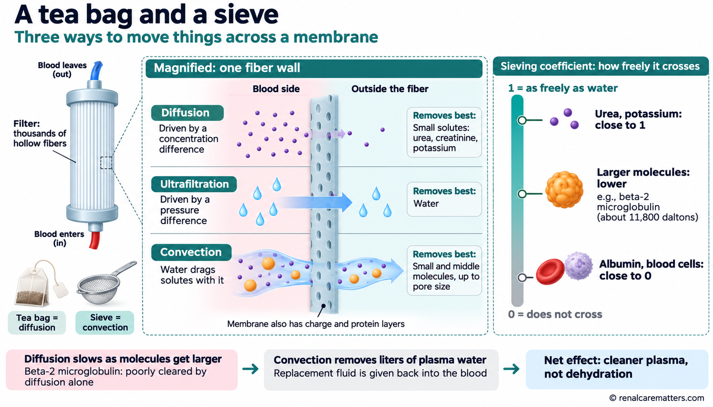
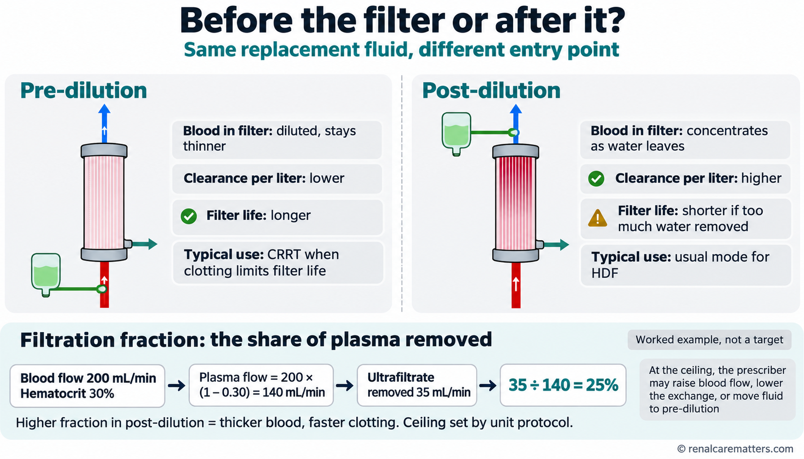
Where each therapy fits, and what is still unknown
Continuous therapy in the ICU. Slow removal over 24 hours causes smaller swings in blood pressure and in brain water than a 4-hour session. On that basis, the Kidney Disease: Improving Global Outcomes (KDIGO) 2012 AKI guideline suggests continuous therapy rather than standard intermittent dialysis for patients who are hemodynamically unstable (graded 2B, a weak suggestion on moderate-quality evidence). It makes the same 2B suggestion for patients with acute brain injury or raised intracranial pressure.1 Randomized comparisons have not shown that any one form of kidney support improves survival. The choice is made for tolerance, availability, and the team’s experience.1,2 Module 4 explains how and when support is started. This module covers how continuous therapy is run.
Hemodiafiltration in the dialysis unit. HDF is a chronic, outpatient therapy. It aims to clear middle molecules that standard HD removes poorly, and it is often better tolerated hemodynamically, partly because the large exchange cools the blood. Whether it improves survival depends on delivering a high convection volume. The HDF sections below set out the randomized evidence, including the largest trial.
| Continuous therapy (CRRT) | Hemodiafiltration (HDF) | |
|---|---|---|
| Setting | ICU, around the clock | Dialysis unit, about 4 hours, three times a week |
| Patient | Critically ill, usually with AKI, often in shock | Stable patient with kidney failure |
| Access | Temporary dialysis catheter | Fistula, graft, or tunneled catheter with good flow |
| Replacement fluid | Commercial sterile bags hung by the nurse | Made online by the machine from ultrapure dialysate |
| Main nursing risks | Fluid-balance error, anticoagulation complications, circuit clotting, hypothermia, electrolyte loss | Water and dialysate contamination, clotting at high filtration fraction, not achieving the prescribed convection volume |
What remains uncertain. For continuous therapy, the best anticoagulant for each patient, the right moment to stop, and how to adjust medicines that the circuit removes are still debated. For HDF, the convection volume needed for benefit, which patients gain most, and how results from European trials apply in Asian units are open questions. Where evidence is incomplete, the unit protocol and the physician’s order decide. Your accurate observations are what make those decisions possible.
Safety rules shared by every convective therapy
Replacement fluid is an intravenous medicine. Liters of it enter the bloodstream every hour. A wrong bag or a wrong additive acts like a large intravenous error. Before you hang or start it, check the prescription, the product and its concentrations (above all potassium, phosphate, calcium, and bicarbonate), the expiry date, the bag’s integrity, and any additive label. Use a second person where the unit requires it. In HDF the machine makes the fluid, so its safety rests on the water system, the ultrafilters, and the disinfection record instead (Module 8).
Three fluid numbers that must agree. The prescribed net removal, the machine’s recorded net removal, and the patient’s total balance are different numbers. The total balance counts every infusion, feed, drug, and drain. Record all three as the protocol requires. Report when they drift apart, or when the patient cannot tolerate the removal.
| Common error | What it causes | How it is prevented |
|---|---|---|
| Wrong replacement or dialysate bag (for example, potassium-free instead of potassium-containing) | Dangerous potassium, calcium, or acid–base changes over hours | Independent check of every bag against the order; labeled additives |
| Bag or scale disturbed, bag hung but clamp closed | Fluid removed or given that the machine does not count correctly | Follow the machine’s bag-change steps; never lean on or touch the scales |
| Alarm silenced and treatment restarted without finding the cause | Clotting, air entry, blood loss, or unrecorded fluid shifts | Look at the patient and the circuit first, then the machine; escalate repeated alarms |
| Open connection or contaminated port | Bloodstream infection; air entry | Aseptic technique, locked connections kept visible, catheter care as in Module 7 |
| Heat loss through the circuit unnoticed | Hypothermia that also hides fever | Temperature checks and warming as ordered |
Answer alarms; never bypass them. Pressure, air, blood-leak, and balance alarms protect the patient. Read which alarm it is. Look at the patient and the lines before you touch the machine. Correct the cause, and document it. An air detector or blood-leak detector is never overridden.
Document and hand over. Each shift’s record shows the prescription, the settings, the delivered treatment (effluent dose in CRRT; achieved convection volume in HDF), the fluid balance, anticoagulation monitoring, alarms and actions, circuit changes, and the patient’s response. Hand over with SBAR (Situation, Background, Assessment, Recommendation).
Every bag is a medicine, every alarm has a cause, and every hour has a balance. Check all three before you move on.
The four continuous modes, and the prolonged intermittent alternative
Continuous renal replacement therapy (CRRT) is the form of kidney replacement therapy (KRT) built for the patient with acute kidney injury (AKI) who is too unstable for a standard 4-hour session. It runs around the clock in the intensive care unit (ICU), usually through a non-tunneled dialysis central venous catheter (CVC). It removes solute and fluid slowly enough that blood pressure (BP) and brain water shift very little from hour to hour. KDIGO suggests continuous therapy rather than standard intermittent therapy for hemodynamically unstable patients and for those with brain injury or raised intracranial pressure (both graded 2B). It describes continuous and intermittent therapy as complementary, not competing.1
Every continuous machine is built from the same parts: a blood pump, a filter, an effluent pump that pulls fluid out of the filter, and, depending on the mode, a dialysate pump, one or two replacement-fluid pumps, and syringe or infusion pumps for anticoagulant. Most current machines weigh each bag on built-in scales, or measure volumes with balancing chambers, and recalculate the fluid balance every few seconds. The name of the mode simply tells you which pumps are running.
| Mode | What runs | Main mechanism | What it removes best | Typical reason it is chosen |
|---|---|---|---|---|
| Slow continuous ultrafiltration (SCUF) | Blood pump and effluent pump only; no dialysate, no replacement fluid | Ultrafiltration (UF) alone | Water, with only small amounts of solute carried along | Fluid overload, for example in heart failure resistant to diuretics, when potassium, acid–base, and urea are acceptable |
| Continuous venovenous hemofiltration (CVVH) | Replacement fluid, pre-filter, post-filter, or both; no dialysate | Convection | Small and middle molecules, in proportion to the volume filtered | Unit preference, or when larger molecules are a target; demands careful attention to filtration fraction |
| Continuous venovenous hemodialysis (CVVHD) | Dialysate flowing countercurrent; no replacement fluid | Diffusion | Small molecules: potassium, urea, hydrogen ions | Common with regional citrate protocols; lower filtration fraction, so filters tend to last longer |
| Continuous venovenous hemodiafiltration (CVVHDF) | Both dialysate and replacement fluid | Diffusion plus convection | Small molecules efficiently, plus some middle molecules | A flexible default in many ICUs; the mode used in the two large dose trials discussed below |
In every mode the machine also performs net UF. The effluent pump draws slightly more out than the dialysate and replacement pumps put in. The difference is the fluid taken from the patient. The prescriber sets that difference separately from the clearance settings. So a patient can receive a high clearance with zero net removal, or a large fluid removal with modest clearance.
No mode has been shown to improve survival over another. The choice depends on what the patient most needs (fluid, potassium, acid–base, a specific toxin), the anticoagulation plan, the machine and fluids the hospital stocks, and the team’s training. Your job is to know which mode is running, and therefore which fluids, pumps, and checks apply.
Prolonged intermittent therapy. Sustained low-efficiency dialysis (SLED) is one form of prolonged intermittent renal replacement therapy (PIRRT). It uses a standard hemodialysis (HD) machine at reduced blood and dialysate flows, for roughly 6 to 12 hours, often overnight. It sits between the two extremes:
| Feature | CRRT | SLED or PIRRT | Intermittent HD |
|---|---|---|---|
| Duration | Around the clock | Roughly 6 to 12 hours, per order | About 3 to 5 hours |
| Machine | Dedicated continuous machine with bagged fluids | Standard HD machine with treated water and online dialysate | Standard HD machine |
| Hemodynamic gentleness | Highest | Intermediate to high | Lowest; needs an otherwise stable patient |
| Staffing | ICU nurse, with dialysis team support per hospital model | Dialysis nurse present or on call during the run, per hospital model | Dialysis nurse |
| Time off the machine for procedures and mobilization | Little | The rest of the day | Most of the day |
| Cost of consumables | Highest: dedicated sets and many liters of bagged fluid | Lower | Lowest |
The Philippine picture. Continuous machines and their bagged fluids are found mainly in tertiary hospital ICUs, and the consumables are expensive for families and hospitals alike. In many Philippine hospitals, SLED on a standard HD machine is the practical way to give an unstable patient a gentler treatment. Its water comes from the hemodialysis water system, or from a portable reverse osmosis unit that meets the water standard (Module 8).3 The principles in this module apply to both: slow removal, careful anticoagulation, hourly accounting, and early reporting. When the hospital cannot offer what a patient needs, the honest conversation and the referral belong to the physician. Your part is accurate, timely data.
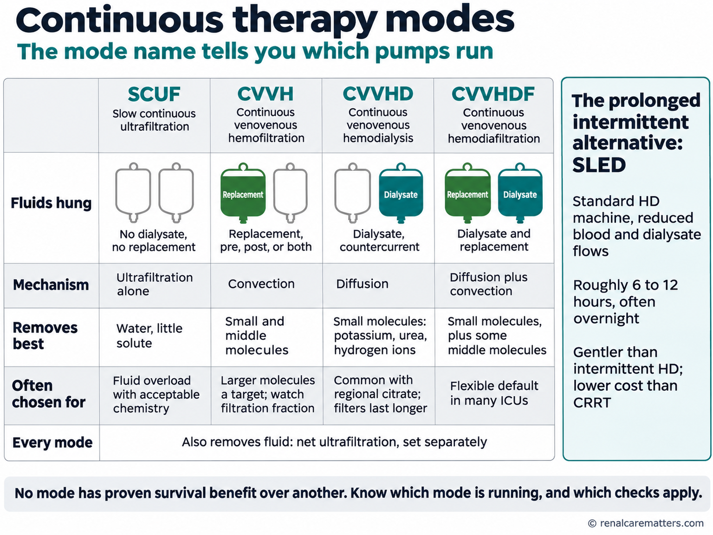
Reading the prescription: dose, flows, and fluid removal
A complete continuous therapy order has a separate line for each pump. Read it as a set of independent instructions. A change in one line does not change the others.
| Order element | What it controls | What the nurse checks |
|---|---|---|
| Mode | Which pumps and fluids are used | The machine program matches the order; the correct fluids are hung |
| Blood flow | How fast blood passes through the filter | Set value; whether the catheter actually delivers it without access alarms |
| Dialysate rate | Diffusive clearance | Correct bag composition and rate |
| Replacement fluid rate and site (pre-filter, post-filter, or split) | Convective clearance and filtration fraction | Correct bag, rate, and line position |
| Net fluid removal | How much fluid leaves the patient each hour through the machine | Hourly target, upper and lower limits, and the conditions for stopping or reducing it |
| Anticoagulation | Whether the circuit is protected from clotting, and how | Agent, protocol, and laboratory monitoring schedule |
| Fluid composition | Potassium, phosphate, calcium, and bicarbonate in the bags | The label of every bag against the order; additives only as ordered and labeled |
Dose is effluent. In continuous therapy, small-solute clearance is roughly equal to the volume of effluent. So the dose is written as effluent volume per kilogram of body weight per hour. Effluent is everything the effluent pump removes: spent dialysate, filtered replacement fluid, and the net fluid taken from the patient.
KDIGO recommends delivering an effluent volume of 20 to 25 mL/kg per hour for continuous therapy in AKI. This is a strong recommendation on high-quality evidence (graded 1A). The guideline notes that delivering it usually needs a higher prescription.1 Two large randomized trials explain why more is not better:
- The RENAL trial randomized 1,508 critically ill adults with AKI to post-dilution CVVHDF at an effluent of 40 or 25 mL/kg per hour. Mortality at 90 days was 44.7% in both groups, an absolute difference of zero. Low phosphate was more common with the higher intensity.4
- The VA/NIH ATN trial randomized 1,124 critically ill adults to intensive or less-intensive therapy. Unstable patients received CVVHDF at 35 or 20 mL/kg per hour. Mortality at 60 days was 53.6% with intensive and 51.5% with less-intensive therapy, and recovery of kidney function did not differ.5
A higher dose costs more fluid. It removes more phosphate, potassium, nutrients, and antibiotics. In these trials it did not improve survival. The practical problem in most ICUs is the opposite: delivering less than was prescribed.
Delivered versus prescribed dose. Every minute the blood pump is stopped, no clearance happens. Bag changes, alarms, filter clotting, circuit changes, trips to imaging, and access problems all subtract from the day. Pre-filter replacement fluid also dilutes the blood before the filter, so each liter of effluent carries slightly less solute. This is why the prescription is usually set above the target. It is also why recording downtime is a nursing task with direct consequences for dose.
A worked example (an illustrative calculation, not an order). A 70 kg patient on CVVHDF has dialysate at 1,000 mL per hour, post-filter replacement at 600 mL per hour, and net removal of 100 mL per hour.
- Effluent = 1,000 + 600 + 100 = 1,700 mL per hour.
- Prescribed dose = 1,700 ÷ 70 = about 24.3 mL/kg per hour.
- Over the day, the circuit clots once and the patient goes for a computed tomography scan. The machine ran for 20 of 24 hours.
- Delivered dose = 24.3 × 20 ÷ 24 = about 20.2 mL/kg per hour, at the bottom of the target band, before any allowance for dilution.
The site’s continuous therapy dose calculator does the same arithmetic, with a correction for pre-filter replacement. Use it to check your understanding, not to change a prescription.
Blood flow is not dose. In intermittent HD, blood flow drives clearance. In continuous therapy, effluent does. Blood flow matters here for filter life and filtration fraction. If blood flow falls, for example because of repeated access alarms, while the replacement rate stays the same, a larger share of the plasma is filtered. The blood in the fibers thickens, and the filter clots sooner.
Net removal is a rate, not just a daily total. “Two liters negative by tomorrow” is safe only if the hourly rate is one the circulation can refill from the tissues. The prescriber sets the rate and the limits. You watch the patient’s response hour by hour, as the fluid section below describes.
Dose is what reached the patient, not what was typed into the machine. Record every stop.
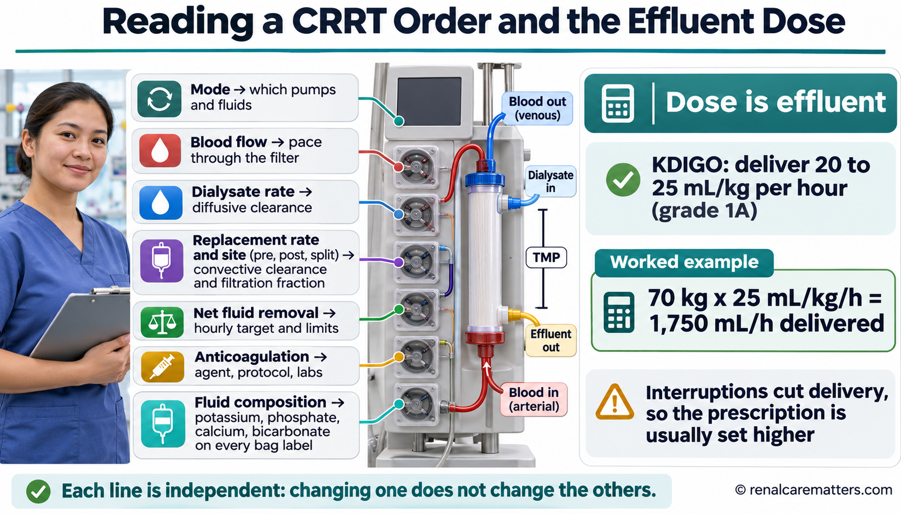
Keeping the circuit open: no anticoagulant, heparin, or regional citrate
Blood in a plastic circuit clots. A clotted filter stops treatment. If its blood cannot be returned, the patient loses it. A new set costs money, and the delivered dose falls. There are three broad strategies, and the prescriber chooses among them for each patient.
| Strategy | How it works | Main risk | Nursing monitoring, per protocol |
|---|---|---|---|
| No anticoagulant | Relies on the patient’s own clotting problem, pre-filter dilution, adequate blood flow, and fewer interruptions | Short filter life and lost blood | Pressure trends; filter appearance; prompt response to alarms |
| Unfractionated heparin | Infused into the circuit before the filter; it also enters the patient | Bleeding in the patient; heparin-induced thrombocytopenia | Clotting tests and platelet count as ordered; bleeding from catheter sites, wounds, gut, and airway |
| Regional citrate | Infused before the filter; binds calcium so the blood in the circuit cannot clot; calcium is replaced into the patient | Low ionized calcium, citrate accumulation, alkalosis, errors with the calcium infusion | Patient ionized calcium and post-filter ionized calcium; total calcium; blood gases and sodium |
KDIGO suggests regional citrate rather than heparin for continuous therapy in patients who have no contraindication to citrate (graded 2B). For patients who cannot receive citrate, it suggests unfractionated or low-molecular-weight heparin (graded 2C).1 The RICH trial compared the two directly. Among 596 critically ill patients analyzed, median filter life was 47 hours with citrate and 26 hours with heparin. Bleeding complications occurred in 5.1% with citrate and 16.9% with heparin, about 12 fewer bleeds per 100 patients. New infections were more frequent with citrate, 68.0% against 55.4%, about 13 more per 100 patients. The trial stopped early, so it could not show whether either strategy changes survival.6
How citrate works, step by step.
- Citrate solution is infused into the blood line just after the blood leaves the patient. Citrate binds ionized calcium. The clotting cascade cannot run without ionized calcium, so the blood in the circuit does not clot.
- In the filter, much of the citrate–calcium complex passes into the effluent and is discarded.
- The calcium lost this way is replaced by a separate calcium infusion into the patient, through the return line or a separate central line, according to the machine and protocol.
- The citrate that reaches the patient is metabolized, mainly by the liver and also by muscle. Each molecule yields bicarbonate. This is why citrate protocols use fluids with less buffer than heparin protocols.
Two calcium numbers, two different questions. The post-filter ionized calcium, sampled from the circuit after the filter, answers “Is the circuit anticoagulated enough?” It guides the citrate rate. The patient ionized calcium, sampled from an arterial line or the patient’s own vein, answers “Is the patient safe?” It guides the calcium infusion. Mixing up the sample sites leads to the wrong adjustment, so label every sample with its site and time. Target ranges and the response to each result come from the unit’s protocol.
Low ionized calcium in the patient shows as tingling around the mouth or in the fingers, cramps or spasm, a falling BP, arrhythmia, or a prolonged QT interval on the electrocardiogram. Check first that the calcium infusion is running, connected, and not empty. A calcium bag that ran out unnoticed is a common cause. Report at once.
Citrate accumulation happens when citrate enters the patient faster than the body can metabolize it. The patients at risk have severe liver failure, or severe shock with poor tissue perfusion, often signaled by a high or rising lactate. Accumulated citrate keeps binding calcium, so the pattern is:
- Total calcium rising while patient ionized calcium stays low or falls, so the total-to-ionized calcium ratio rises
- A calcium infusion requirement that keeps increasing to hold the patient’s ionized calcium in range
- Worsening metabolic acidosis with an increasing anion gap, because citrate is not being turned into bicarbonate
A rising ratio is reported, not managed alone. The threshold for action, and the response (lowering blood flow and citrate, raising clearance, or changing strategy), are set by the protocol and the prescriber.
Citrate excess with normal metabolism is the opposite problem. The body metabolizes all the citrate it receives, and the bicarbonate produced builds up. The patient develops metabolic alkalosis, sometimes with high sodium, since many citrate solutions carry sodium. Report a rising bicarbonate or pH. The prescriber adjusts the fluids or rates.
Heparin and the platelet count. Heparin-induced thrombocytopenia is possible when the platelet count falls substantially after several days of heparin, when new clots form in the circuit or the patient despite heparin, or when skin lesions appear at injection sites. Report it promptly. In a patient with this condition, KDIGO states that all heparin must be stopped, including heparin catheter locks and flushes (graded 1A), and a non-heparin anticoagulant is chosen by the prescriber.1 Other causes of a falling platelet count in the ICU, including sepsis and the circuit itself, appear under complications.
Safety rules for every strategy. Anticoagulant and calcium infusions are high-alert medicines. Double-check the bag, concentration, rate, and line at every change. Never run the calcium infusion through the same line as the citrate. Never restart a stopped citrate or calcium infusion without knowing why it stopped. No doses appear in this module. Every rate comes from the prescriber’s order and the unit protocol.
On citrate, the calcium bag is as important as the citrate bag. Never let it run dry.
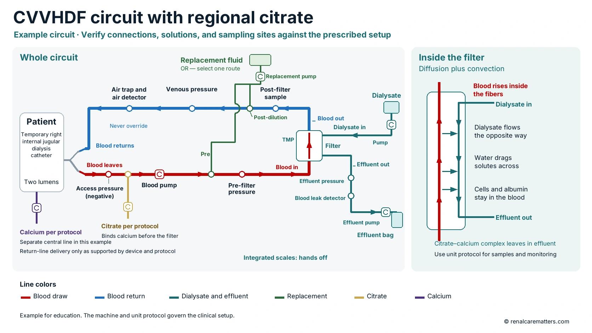
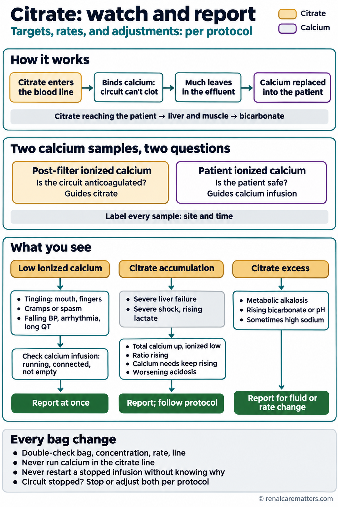
Hourly fluid balance: three numbers that must agree
Continuous therapy is often started largely to remove fluid. In one large multicenter observational study of critically ill adults with AKI, fluid overload, defined as a gain of more than 10% of body weight, was associated with higher mortality. Among patients who received dialysis, survivors had less fluid accumulated when treatment started.7 The design cannot show that removing fluid saves lives. Sicker patients both gain more fluid and die more often. Still, it is the reason fluid balance is watched so closely.
The three numbers. Confusing them is the most common fluid error in continuous therapy.
| Number | What it is | Where it comes from |
|---|---|---|
| Machine net removal | The fluid the machine took out of the patient, after subtracting what it put back as dialysate and replacement fluid | The machine’s balance display for the hour |
| Patient total balance | Everything in minus everything out: all infusions, flushes, medicines, nutrition, and blood products, minus urine, drains, gastric losses, stool, and machine net removal | The nurse’s hourly intake and output record |
| Prescribed goal | What the prescriber wants the patient’s balance to be per hour or per day, with limits | The order |
The machine knows nothing about the antibiotic infusion, the feed, or the urine bag. A machine that removed exactly what was set can still leave the patient positive if other intake is high.
A worked hour (illustrative). The order asks for a patient total balance of 100 mL negative per hour.
- Intake: infusions 180 mL, enteral feed 60 mL, line flushes 10 mL = 250 mL
- Output: urine 20 mL, surgical drain 30 mL = 50 mL
- Machine net removal: 250 mL
- Patient total balance = 250 − 50 − 250 = 50 mL negative
The machine did what it was set to do. The patient is still 50 mL short of the goal this hour. Some units allow nurses to adjust machine removal within written limits to meet a total-balance goal. Others require a call each time. Follow the order and protocol, and document which number you adjusted and why.
Citrate and calcium infusions add volume. Depending on the machine, they may or may not be included in the machine’s balance. Find out how your machine handles them, so that they are counted once: not twice, and not never.
When to call.
- BP falls, vasopressor needs rise, heart rate climbs, or lactate rises during removal. These suggest removal is outpacing refill from the tissues. Reduce or pause removal only as the protocol allows, and report.
- The cumulative balance drifts from the goal by more than the protocol’s limit over several hours, in either direction.
- The machine reports a balance error, or a fluid-loss limit has been reached.
- Urine output rises noticeably (possible recovery; see transitions below), or the patient’s weight, edema, or lung findings move against the goal.
Cumulative balance. Total the hourly patient balances across the shift and the day. Carry the running total forward from the start of therapy, and ideally from ICU admission. The site’s continuous therapy flowsheet and fluid-removal calculators follow the same logic: hourly entries, a running total, and comparison with the goal. A daily weight on the same bed scale, with the same equipment on the bed, is a useful cross-check. It does not replace the hourly record.
Handling bags on machines that weigh them. Built-in scales assume that nothing touches the bags except the machine. Common errors:
- A bag swinging, touching the machine frame, or with a line resting on it while the scale reads
- Changing a bag without the machine’s bag-change function, so the scale reads a sudden “loss” or “gain”
- Hanging the wrong bag on the wrong scale, for example dialysate on the replacement scale
- Clamps left closed after a change, or a frangible seal not fully broken
- Draining effluent without pausing the effluent scale per the manufacturer’s steps
- Overriding repeated balance alarms instead of finding the cause
Each of these creates an error in fluid the machine believes it removed or returned. Unnoticed, such errors can reach liters over a day. That is why most machines stop treatment when cumulative balance errors pass a set limit. Repeated balance alarms are reported and the scales checked, not cleared and restarted.
Document every hour: machine net removal, all intake, all output, patient total balance, cumulative balance, the prescribed goal, vital signs, circuit pressures, any downtime with its cause and duration, and any adjustment made with its authority.
The machine balances only its own bags. You balance the patient.
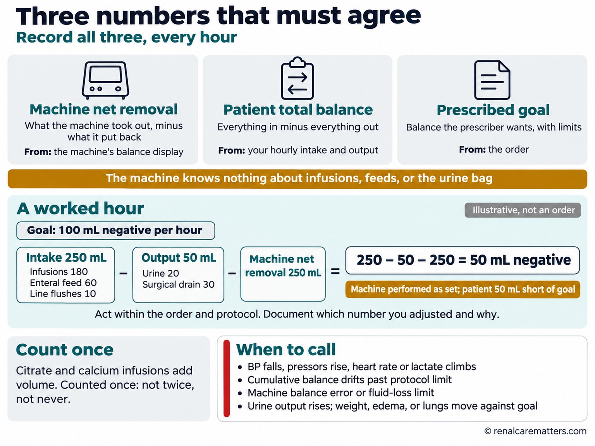
The circuit: priming, pressures, filter life, and alarms
Priming and connection. Load and prime the set exactly as the manufacturer directs, with the prime solution your unit orders. Check that the filter and all lines are free of air and that every clamp is in the right position. Connection to the catheter is an aseptic procedure (Module 7): mask, hand hygiene, clean gloves or sterile technique per policy, scrubbed hubs, and both lumens aspirated and flushed before connection. At the start, blood flow is usually raised in steps while you watch the patient’s BP and the access and return pressures.
The pressure points. Machines name and display them differently. The physiology is the same.
| Pressure | Where it is measured | What a change usually means |
|---|---|---|
| Access (arterial) pressure | Between the catheter and the blood pump; normally negative | More negative: the pump is pulling against a resistance in the catheter or vein |
| Pre-filter pressure | After the blood pump, before the filter; positive | Rising: clot forming in the filter, or a blockage further downstream |
| Return (venous) pressure | After the filter, before blood re-enters the patient; positive | Higher: blockage in the return line, catheter, or vein, or clot in the air trap. Lower or sudden fall: possible disconnection |
| Effluent pressure | On the fluid side of the filter | Becoming more negative: the membrane is clogging and the pump must pull harder |
| Transmembrane pressure | Calculated across the membrane from the other pressures | A steady rise: the membrane pores are clogging, which lowers convective clearance and warns of filter failure |
| Pressure drop | Pre-filter pressure minus the pressure at the filter outlet | A rise: the blood channels inside the filter are clotting |
Trends matter more than single numbers. Record pressures hourly. A transmembrane pressure or pressure drop that climbs over several hours predicts clotting long before the circuit stops. That gives you time to report and to plan a controlled change with blood return, instead of losing the circuit.
Troubleshooting. Look at the patient before the machine, every time.
| Alarm or trend | Likely cause | First nursing checks |
|---|---|---|
| Access pressure too negative, often with coughing or position change | Catheter tip against the vessel wall, kink, low circulating volume, clot in the lumen | Position of head and hip (femoral catheters kink when the patient sits up); external kinks and clamps; dressing tension; a gentle flush per protocol; report persistent alarms. Reversing the lines is done only on a physician order or protocol, and increases recirculation |
| Return pressure high | Kinked or clamped return line, clot in the air trap or return lumen, patient position | Line path and clamps; air trap for clot; patient position; report if not resolved |
| Return pressure suddenly low | Disconnection or line separation | Look at every connection at once; stop the blood pump if blood is leaking; this is an emergency |
| Pre-filter pressure, transmembrane pressure, or pressure drop rising steadily | Filter clotting; post-dilution with high filtration fraction; low blood flow; inadequate anticoagulation | Anticoagulant and calcium infusions running and connected; recent interruptions; filter and air trap for dark streaks; report the trend and prepare for a planned change |
| Air detector alarm | Air in the return line, often from a loose connection, an empty bag, or a micro-leak | Do not override; inspect the line and air trap; remove air only by the manufacturer’s procedure; check every connection and bag |
| Blood leak detector alarm | Red cells in the effluent from a ruptured fiber, or a dirty or misread sensor | Look at the effluent; follow the manufacturer’s procedure; a confirmed leak means the filter is changed |
| Balance or scale alarm | Bag touching, wrong bag, clamp closed, empty or full bag | Bags hanging freely; clamps; bag levels; use the bag-change function |
What shortens filter life. A high filtration fraction, especially with post-dilution replacement. Low or interrupted blood flow. Frequent access alarms. A pump left stopped with blood in the circuit. Inadequate or interrupted anticoagulation. Air in the circuit. Most of these are within your reach: a well-positioned catheter, quick answers to alarms, few unnecessary stops, and anticoagulant and calcium bags changed before they run out.
Planned change versus clotted circuit. A circuit is changed when it reaches the manufacturer’s maximum running time, when pressures show clotting is coming, or when a pause will last long enough for the circuit to clot. In a planned change, the blood in the circuit is returned to the patient by the machine’s procedure. That saves a meaningful volume of blood in an anemic ICU patient. When the circuit has already clotted, or the return pressure is very high, returning the blood can push clot toward the patient. Most protocols forbid returning blood from a clotted circuit. Follow yours, document the estimated blood lost, and report it.
Machine-specific steps for priming, bag changes, blood return, and alarm handling come from the manufacturer’s instructions and the unit’s competency program. This module explains the reasons behind them. It does not replace them.
A rising trend is a warning you can act on. A clotted circuit is a loss you can only record.
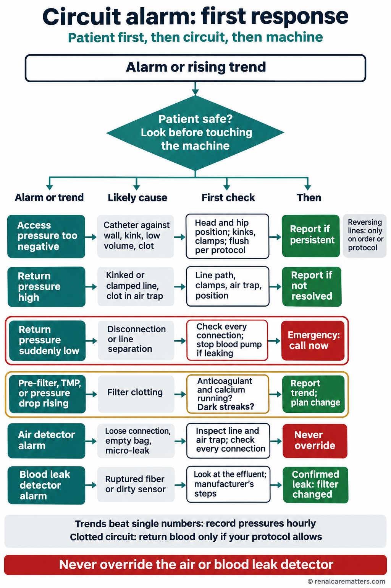
Complications, and what continuous clearance takes away
Continuous clearance does not choose what it removes. Over days it takes out heat, electrolytes, nutrients, and medicines as steadily as it removes urea and potassium.
Hypothermia. Blood outside the body loses heat, and room-temperature fluids at liters per hour cool it further. Machines have blood or fluid warmers, but patients still cool, particularly at high effluent rates. Cooling hides fever. A patient on continuous therapy may have a normal temperature despite sepsis. Look for other signs of infection: a rising white cell count, new hypotension, a rising lactate, or a warmer setting that keeps having to go up. Report them.
Electrolytes. Low phosphate is common. In the RENAL trial it was more frequent with the higher intensity.4 Low potassium and low magnesium are also common after the first day, especially with potassium-free or low-potassium fluids. Replacement is given as ordered, intravenously or by changing to fluids that contain the electrolyte. Your part is to keep the laboratory schedule and make sure each result is acted on.
Acid–base. Bicarbonate-buffered fluids correct metabolic acidosis over hours to days. KDIGO suggests bicarbonate rather than lactate as the buffer in AKI (graded 2C), and recommends it in circulatory shock (graded 1B).1 Overcorrection can cause metabolic alkalosis, particularly with citrate. Follow blood gases as ordered.
Bleeding. Sources include the catheter site, recent surgical wounds, the gut, and the airway. Heparin raises the risk. Check sites at each assessment. Report new bleeding, a falling hemoglobin, or blood in drains, stool, or the endotracheal tube.
Catheter problems. ICU dialysis catheters are a source of bloodstream infection, and of dysfunction from clot, kinking, or malposition. Reserve the catheter for kidney replacement therapy, handle it aseptically at every connection, and inspect it each shift (Module 7). Report fever, redness, discharge, or pain at the site, and access alarms that keep coming back after repositioning.
Drug removal. Continuous therapy removes many medicines, including many antibiotics. Their dosing differs from both normal kidney function and intermittent HD. Under-dosing an antibiotic in sepsis is as dangerous as overdosing. When a new medicine is ordered, or the effluent rate changes substantially, ask the pharmacist or prescriber whether the dose has been adjusted for continuous therapy. Note the time of any long interruption, because it changes how much drug is removed.
Nutrition. Amino acids, glucose (with some fluids), water-soluble vitamins, and trace elements pass into the effluent. Critically ill patients on continuous therapy have high protein needs. The dietitian and prescriber set the plan. Record feeding interruptions for procedures, so that intake can be compared with the plan.
Low platelets. In an ICU patient on continuous therapy, a falling platelet count may come from sepsis, medicines, consumption in the circuit, or heparin-induced thrombocytopenia. The prescriber determines the cause. Your role is to notice the trend and report it.
| Watch for | How you notice it | Action |
|---|---|---|
| Hypothermia | Core temperature trend; cool skin; shivering | Check the warmer; warming measures per protocol; report; remember that fever may be hidden |
| Low phosphate, potassium, or magnesium | Scheduled laboratory results; weakness; new arrhythmia on the monitor | Report; replace as ordered; confirm the bag composition |
| Low ionized calcium | Tingling, spasm, hypotension, prolonged QT interval | Check the calcium infusion; report at once |
| Rising total-to-ionized calcium ratio or rising calcium requirement | Laboratory trend on citrate | Report; follow the citrate accumulation protocol |
| Metabolic alkalosis | Rising bicarbonate and pH on blood gases | Report for adjustment of fluids or rates |
| Bleeding | Site checks; falling hemoglobin; blood in drains, stool, or airway | Pressure where appropriate; report; review anticoagulation with the prescriber |
| Catheter infection | Fever (which may be masked), redness, discharge, rising white cell count | Report; cultures as ordered; aseptic handling |
| Inadequate drug levels | New antibiotic order; change in effluent rate | Ask the pharmacist or prescriber about continuous therapy dosing |
| Falling platelet count | Daily blood count trend | Report; ask whether heparin-induced thrombocytopenia should be considered |
| Hemodynamic instability | Falling BP or rising vasopressor needs during removal | Reduce or pause removal within protocol; report |
Whatever the circuit removes from the blood, it removes without choosing. Ask each shift what it took that the patient needed.
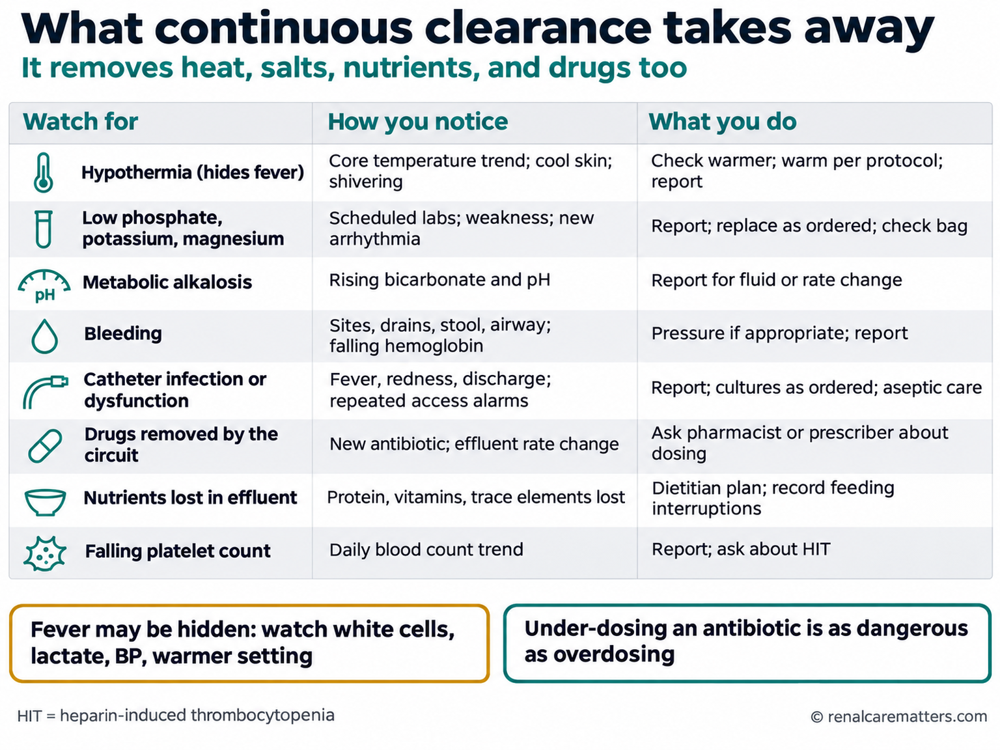
Interruptions, transport, recovery, step-down, and handoff
Planned interruptions. Scans, operations, and procedures often need the patient off the machine. Agree the plan with the team before the time comes. The usual options are:
- Return the blood and disconnect, lock the catheter per protocol, and start a new circuit later. This is the safest choice for long absences, at the cost of a new set.
- Disconnect and recirculate the circuit through a sterile connection, if the protocol and the manufacturer permit, for a short absence. This accepts a risk of clotting and contamination and has a maximum recirculation time.
Either way, stop or adjust the anticoagulant and calcium infusions exactly as the protocol directs when the circuit stops. A calcium infusion that keeps running after citrate has stopped will raise the patient’s calcium. A citrate infusion running without blood flow is a hazard. Record the time off and the reason, because it affects delivered dose and drug dosing.
Transport while still connected is unusual, and done only where the machine and protocol allow it. More often the circuit is disconnected first. Either way, secure and cap the catheter aseptically, and make sure the team carries the plan for reconnection.
Recognizing recovery. A rising urine output without diuretics is often the first sign that the kidneys are recovering. Report it, with the trend in creatinine and potassium. The prescriber may order a trial off therapy, with urine output, fluid balance, potassium, and acid–base watched closely. Your hourly record is the evidence on which the decision to stay off or restart is made.
Step-down to intermittent therapy. Once the patient no longer needs vasopressors and can tolerate fluid removal over a few hours, the team may move from continuous therapy to SLED or intermittent HD, often to allow mobilization and to reduce cost. The ICU nurse’s handover to the dialysis nurse includes the catheter’s function, the cumulative fluid balance, the last laboratory values, the anticoagulation history, and any concern about heparin-induced thrombocytopenia.
Stopping. Therapy stops on an order: when the kidneys have recovered enough, when the patient moves to intermittent therapy, or when goals of care change. The ending is planned. Return the blood per protocol, stop the infusions in the correct order, lock or remove the catheter as ordered, and record the final balances.
Handoff. A structured handoff in the Situation–Background–Assessment–Recommendation format is associated with fewer omissions.8 For a patient on continuous therapy it includes:
- Situation: mode, settings, anticoagulation, and current circuit age
- Background: reason for therapy, start date, and important events (clotted circuits, bleeding, line changes)
- Assessment: hourly and cumulative balance against the goal, latest calcium and electrolyte results, pressure trends, temperature, urine output
- Recommendation: pending laboratory tests, the next planned circuit change, any interruption scheduled, and the questions to raise with the prescriber
When continuous therapy is a trial. For some patients, continuous therapy starts as a time-limited trial with agreed goals and a date to review them, as Modules 4 and 5 describe. Your record of how the patient is responding is part of that review. Bring the family’s questions to the team rather than answering them alone.
Every stop, start, and handover is a moment when a number can be lost. Write it down before you move on.
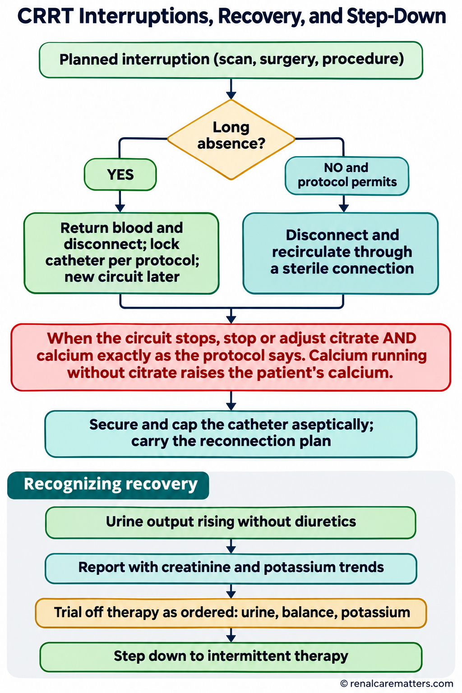
Online hemodiafiltration: how the machine makes fluid safe to infuse
Earlier in this module you built the picture of convection. Water pushed across the membrane drags dissolved solutes with it, and the more water moves, the more of the larger solutes leave. Hemodiafiltration (HDF) brings that picture into the ordinary outpatient session. It keeps everything hemodialysis (HD) already does by diffusion, and adds a large convective volume on top. Far more fluid is filtered out of the blood than the patient could safely lose, so most of it is given back as substitution fluid during the same session.
Where the substitution fluid comes from. A session needs many liters, far more than anyone could hang as bags. In online HDF the machine makes the fluid itself, continuously, from the dialysate it is already preparing. The chain runs like this:
- Treated water from the unit’s reverse osmosis (RO) loop is mixed with acid and bicarbonate concentrates inside the machine, exactly as for HD (Module 8).
- The fresh dialysate passes through a first ultrafilter, a filter fine enough to hold back bacteria and endotoxin. The result is ultrapure dialysate, used on the dialysate side of the dialyzer.
- Part of that ultrapure dialysate is drawn off through a second ultrafilter (on some machines, a further stage as well). This cascade makes the substitution fluid, which the substitution pump infuses directly into the blood line.
Why it can be safe to infuse. Each ultrafilter stage removes most of what reaches it, so filters in series cut bacteria and endotoxin far below what any single stage achieves. The international standard for dialysis fluid quality is Part 5 of the International Organization for Standardization (ISO) 23500 series, ISO 23500-5:2024. It requires online-prepared substitution fluid to be sterile and non-pyrogenic, and the online process to be validated to produce it. Sterility at that level cannot be proved by culturing a sample at the bedside. It depends on a validated machine and filter system used exactly as the manufacturer intends, on clean water and dialysate upstream, and on disciplined disinfection. That is why every requirement below exists, and why substitution fluid is handled as an intravenous medicine, as the shared safety rules earlier in this module state.
The membrane. HDF uses a high-flux dialyzer. Only a membrane with high water permeability can pass 20 or more liters of plasma water in a session at a tolerable transmembrane pressure. The dialyzer model is part of the order. It is not interchangeable with a low-flux dialyzer.
| Feature | High-flux HD | Expanded HD (medium cut-off membrane) | Online HDF |
|---|---|---|---|
| Main clearance mechanism | Diffusion, with a small amount of internal convection | Diffusion plus more internal convection within the dialyzer | Diffusion plus deliberate, high-volume external convection |
| Membrane | High-flux | Medium cut-off, with larger effective pores | High-flux |
| Substitution fluid infused | None | None | Many liters per session, made online |
| Machine | Standard HD machine | Standard HD machine | HDF-capable machine with an online fluid module |
| Middle-molecule removal | Some | More than high-flux HD | More than high-flux HD, rising with convection volume |
| Main concern to watch | Dialysate quality (Module 8) | Albumin loss into the dialysate | Sterile substitution fluid, hemoconcentration, achieving the volume |
Do not confuse expanded HD with HDF. Expanded HD aims at a similar goal, more removal of larger solutes, without infusing any fluid. The survival trials described later tested online HDF. Their results cannot simply be transferred to medium cut-off membranes, which have not yet been shown in a large randomized trial to change survival.
What convection adds. Diffusion already clears small solutes such as urea and potassium well, so HDF changes them little. The gain is in “middle molecules,” which diffuse too slowly to be removed well. The best-known marker is beta-2 microglobulin, a protein of about 11,800 daltons. Its long-term buildup is linked to dialysis-related amyloidosis, with carpal tunnel syndrome and joint pain after many years on dialysis. HDF lowers pre-dialysis beta-2 microglobulin more than HD does. That is a laboratory marker, a surrogate. A lower level is not by itself proof that the patient will feel or do better. Phosphate is also removed somewhat more. But phosphate leaves the tissues slowly, so treatment time and diet remain the main tools for it. HDF does not replace phosphate binders or dietary teaching.
Albumin. Albumin is larger than the pores of a high-flux membrane and is largely kept in the blood. Small losses do occur in HDF, and they rise with very high transmembrane pressures and with some membranes. In most patients the loss is minor. It matters more in a patient who is already malnourished. Review serum albumin trends with the physician and dietitian like any other nutritional marker. Report a falling albumin; do not attribute it to HDF yourself.
Substitution fluid goes straight into the blood. Its safety is built upstream, in the water, the filters, and the disinfection log.
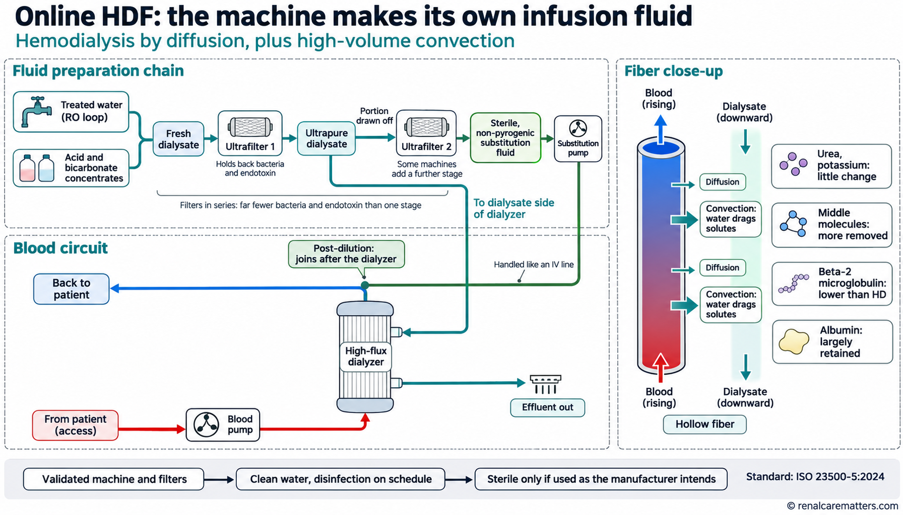
The HDF prescription: convection volume and what drives it
An HDF order contains everything an HD order contains (Module 6), plus the settings for convection. The single number that best sums up the convective dose is the convection volume: the total volume of plasma water filtered across the membrane during the session.
Convection volume = substitution volume + net ultrafiltration (UF) volume.
Net UF is the fluid removed to bring the patient toward target weight. It is filtered out and not replaced, so it counts as convection too. Substitution volume is the fluid filtered out and then given back. Most machines display the substitution and UF volumes, and many also display the convection volume itself.
The high-volume target. The large recent trial, CONVINCE, enrolled only patients judged able to receive a convection volume of at least 23 liters per session. The mean volume delivered in its HDF group was 25.3 liters.9 Earlier pooled analyses of trial data had found the lowest mortality among patients receiving the highest volumes, above 23 liters per 1.73 m² of body surface area.10 Many units therefore use 23 liters per session as a working target. Each patient’s target comes from the physician’s order and unit protocol, not from you.
Post-dilution versus pre-dilution in practice. In post-dilution, substitution fluid enters the venous line after the dialyzer. Every liter filtered carries plasma at full solute concentration, so each liter does the most work. That is why the major trials used post-dilution. The limit sits inside the fiber: as water is pulled out, the blood thickens toward the dialyzer exit. In pre-dilution, fluid enters before the dialyzer. The blood passing the membrane is thinner, so very high filtration is possible. But each liter filtered is partly the substitution fluid itself, so a much larger volume is needed for the same clearance. Mixed (or mid-) dilution modes split the fluid between the two points. Pre-dilution or mixed modes are used, by order, when hemoconcentration keeps limiting post-dilution: a high hematocrit, high plasma protein, or a circuit that keeps clotting. Their volume targets differ from post-dilution targets. Never compare the two kinds of numbers directly.
The determinants. In post-dilution, the safe convective flow is limited to a fraction of the blood flow. HDF machines and studies usually express this as convective flow divided by blood flow, a simpler bedside cousin of the plasma-based filtration fraction defined earlier in this module. The two rise and fall together. Holding that fraction steady, convection volume is set by:
- Effective blood flow. The biggest lever. It depends on the access, the needle size, and an arterial pressure that lets the pump fill.
- Effective treatment time. Every minute lost to a late start, an alarm, or early sign-off is convection lost.
- The filtration fraction the circuit tolerates. This depends on hematocrit, plasma protein, the membrane, and the machine’s own limits.
Worked illustration, arithmetic for teaching only; not a prescription. A four-hour session lasts 240 minutes. To reach 23 liters (23,000 mL), convective flow must average 23,000 ÷ 240 = about 96 mL/min. With a blood flow of 350 mL/min, that is 96 ÷ 350 = about 27% of the blood flow. Keep the same 27%, but let the access deliver only 300 mL/min. Convective flow falls to about 81 mL/min, and over 240 minutes that is about 19.4 liters, below target, though nothing else changed. If that 300 mL/min session also ends 20 minutes early, the volume falls to about 17.8 liters. For the same patient, a session record showing 21.0 liters of substitution and 2.5 liters of net UF gives a convection volume of 21.0 + 2.5 = 23.5 liters.
The illustration shows that blood flow and time, not the substitution setting alone, decide whether the target is reached. It also shows a trap. Net UF counts toward the convection volume, but it is set by the patient’s fluid status. It is never raised to make the convection number look better.
Auto-substitution features. Some HDF machines can set the substitution rate automatically. The machine reads pressures across the dialyzer continuously, and on some models other measurements, and adjusts the rate to keep filtration near the highest level the circuit tolerates without excessive hemoconcentration. These features usually raise achieved volumes and reduce manual adjustment. They work within limits the unit sets, and they cannot create blood flow that the access does not deliver. How the feature works, what it measures, and when it is used follow the manufacturer’s instructions and unit protocol.
What you verify against the order before starting
| Item | What to check |
|---|---|
| Modality and mode | HDF selected on the machine; post-, pre-, or mixed dilution as ordered |
| Dialyzer | The high-flux model ordered; correct patient label if dialyzers are reprocessed and unit policy permits reprocessing for HDF |
| Blood flow and time | As ordered; needle size matched to the blood flow by the unit chart (Module 7) |
| Substitution setting | The ordered rate or volume, or auto-substitution if ordered |
| Convection volume target | Recorded on the treatment sheet so that the achieved volume can be compared at the end |
| Net UF goal | Calculated from today’s pre-dialysis weight and the current target weight, as for HD |
| Dialysate and anticoagulation | As for HD: concentrates, temperature, and anticoagulant all match the current order |
Blood flow and minutes make the convection volume. Protect both from the first minute of the session.
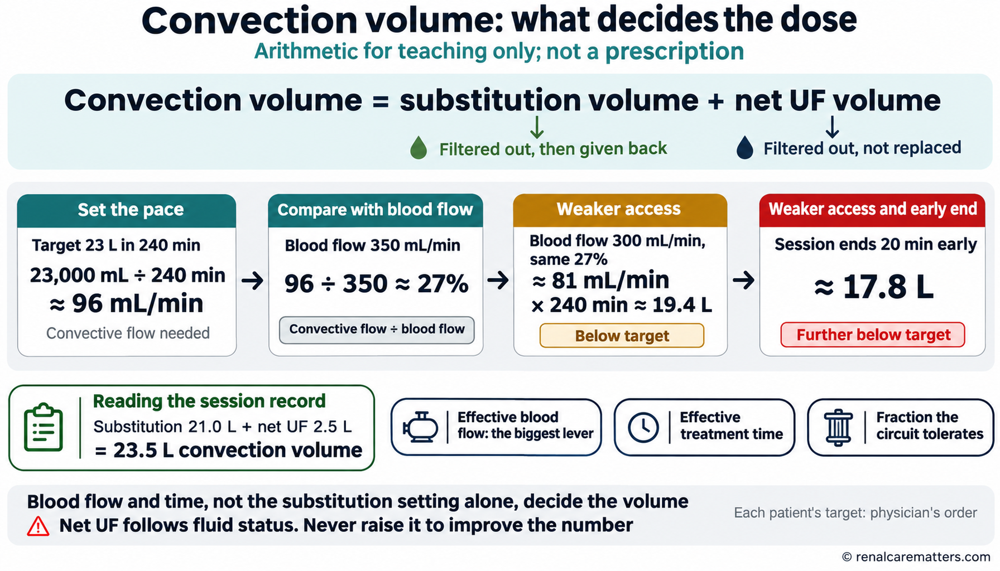
What safe HDF requires: patient, machine, water, and people
HDF is not simply a machine setting. Four things must be right at the same time: a patient whose access can deliver the blood flow, a machine built for it, water and dialysate of a higher microbiological quality than many units need for HD, and staff trained in its specific steps.
The patient and the access. High convection volumes need a high, steady blood flow. A well-functioning arteriovenous fistula or graft usually provides it. A tunneled catheter may or may not, depending on its position and function. Convection volume often falls on catheter sessions, and a catheter that cannot sustain the flow limits the volume whatever else is set. HDF may suit some patients less, or its benefit may be less certain: those whose access cannot provide the flow, those with recurrent circuit clotting at high filtration fractions, and those whose goals of care favor the simplest effective treatment. Selection is the physician’s decision. You supply the evidence: achievable blood flow, arterial and venous pressure trends, how often the target was reached, and how sessions are tolerated.
The machine. Online HDF needs a machine designed and validated for it, with an online substitution module, its own ultrafilters, a substitution pump, and the software and alarms that control filtration. A standard HD machine cannot be converted at the bedside. The machine also runs its own pre-treatment tests. On many models these include an ultrafilter integrity test. A failed test means the machine is not used for HDF until the fault is fixed.
Water and dialysate quality. Dialysis water must meet the water standard described in Module 8.3 For HDF, the dialysate itself must also be ultrapure, and the substitution fluid sterile. The dialysis fluid standard, ISO 23500-5:2024, sets these limits:11
| Fluid | Total viable microbial count | Endotoxin |
|---|---|---|
| Standard dialysis fluid | Less than 100 colony-forming units (CFU) per mL | Less than 0.5 endotoxin units per mL |
| Ultrapure dialysis fluid | Less than 0.1 CFU per mL | Less than 0.03 endotoxin units per mL |
| Online-prepared substitution fluid | Sterile, produced by a process validated to achieve sterility; no culture limit is set, because sterility cannot be shown by routine sampling | Non-pyrogenic |
Your facility’s adopted standard, including the edition in force, governs. The values are shown so that you can see the size of the step from HD to HDF. Ultrapure dialysate has a bacterial limit one thousand times stricter than standard dialysate. Reaching it every time depends on the whole chain: a well-maintained RO loop without stagnant branches, clean concentrate handling (bicarbonate in particular supports bacterial growth), machine fluid paths disinfected on schedule, and intact ultrafilters.
- Ultrafilters are changed at the interval the manufacturer specifies, usually counted in treatments or hours, and earlier if the machine reports a failed integrity test. Log the change, the filter lot, and the reason.
- Disinfection follows the manufacturer’s schedule and method. A skipped or incomplete disinfection is a reason not to use the machine for HDF until it has been done.
- Microbiological and endotoxin testing of water and dialysate follows the unit’s written policy. The policy sets the sampling points (including dialysate from HDF machines), the methods, the frequency, and the action levels. Sampling uses the same aseptic technique taught in Module 8. Follow the Department of Health (DOH) licensing requirements and any Philippine Society of Nephrology (PSN) guidance that apply to the facility. This course does not state a testing frequency, because it must come from those sources and the unit policy.
Staff training and documentation. Every nurse who sets up, runs, or ends HDF needs documented training on the specific machine model, observed practice, and periodic competency review. Training covers the substitution line connection, online priming and rinse-back where the machine uses them, the HDF-specific alarms, and the logs. Dialysis technicians who maintain the machines and water system need parallel training on ultrafilter changes, integrity tests, and disinfection.
The Philippine context. Online HDF is available in a limited but growing number of Philippine units, mostly in larger urban centers. It needs HDF-capable machines, a water system that reliably supports ultrapure dialysate, and recurring costs for ultrafilters, testing, and training. Where it is offered, explain the cost to the patient, and what any insurer or government program will pay, before the patient chooses. Use the unit’s current written information, not figures remembered from elsewhere. Patients who cannot reach high volumes, or cannot afford HDF, continue to receive good care with well-delivered high-flux HD.
If any link in the chain is in doubt (water, filter, disinfection, or training), the machine does not run HDF today.
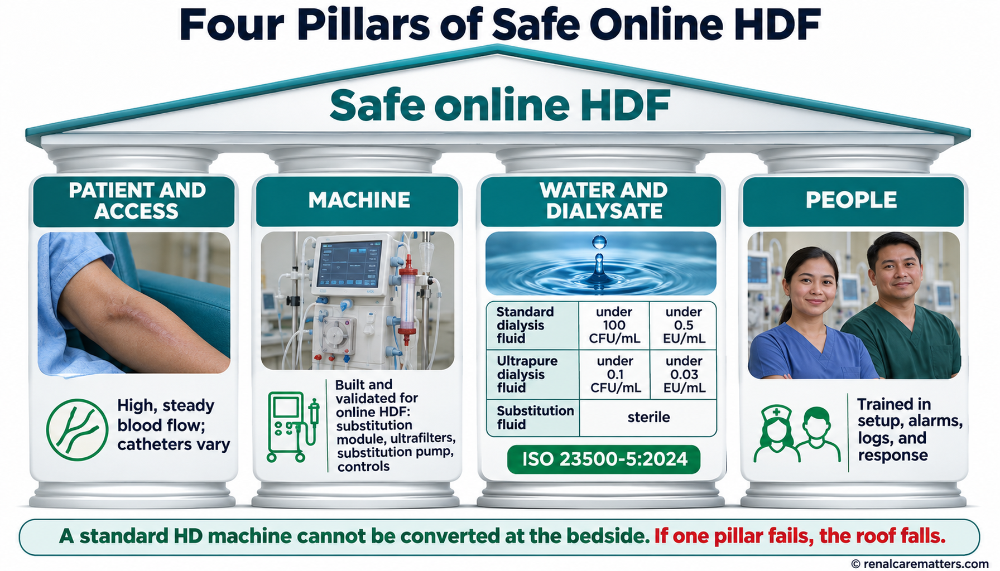
What the trials show, and what they do not
For two decades, observational studies suggested that patients on HDF lived longer than patients on HD. Observational studies cannot separate the effect of a treatment from the effect of who receives it. Healthier patients with better access are more likely to be placed on HDF and to reach high volumes. Randomized trials were needed, and at first their results seemed to disagree.
| Trial | Patients and comparison | Primary outcome and result | Note on convection volume |
|---|---|---|---|
| CONTRAST (2012) | 714 patients; post-dilution online HDF versus low-flux HD | All-cause death: no significant difference (hazard ratio 0.95; 95% confidence interval 0.75 to 1.20) | In an on-treatment analysis, patients who received higher volumes had lower mortality; the authors stated that this subgroup finding required confirmation |
| Turkish online HDF study (2013) | 782 patients; post-dilution online HDF versus high-flux HD | Composite of death and nonfatal cardiovascular events: no significant difference (event-free survival 77.6% versus 74.8%) | Mean filtration volume about 17.2 liters; in a post hoc analysis, patients above 17.4 liters had better survival |
| ESHOL (2013) | 906 patients; high-efficiency post-dilution online HDF versus continued HD | All-cause death 30% lower with HDF (hazard ratio 0.70; 95% confidence interval 0.53 to 0.92) | Designed around high-efficiency HDF; sessions complicated by low blood pressure and all-cause hospitalization were also less frequent with HDF |
| CONVINCE (2023) | 1,360 patients on high-flux HD for at least 3 months, all judged able to receive at least 23 liters; high-volume HDF versus continued high-flux HD | All-cause death 17.3% (118 of 683) with HDF versus 21.9% (148 of 677) with HD over a median of 30 months (hazard ratio 0.77; 95% confidence interval 0.65 to 0.93) | Mean delivered convection volume 25.3 liters per session |
Sources for the table: CONTRAST,12 the Turkish study,13 ESHOL,14 and CONVINCE.9
CONVINCE in absolute terms. The 23% relative reduction sounds large. In absolute terms, 4.6 fewer patients per 100 died over a median of 30 months. That means about 22 patients treated with high-volume HDF for that period to prevent one death. This is a real benefit on the outcome that matters most, in patients selected for their ability to reach high volumes.9
Why the earlier trials differed. The most consistent explanation is the convective dose actually delivered. The trials that found no overall benefit delivered lower volumes on average. In both, the patients who happened to receive higher volumes did better. Those were post hoc and on-treatment analyses, so they show an association, not proof. Patients who reach high volumes usually have better access and better health, and those advantages could explain part of their survival. CONVINCE addressed this directly. It enrolled only patients able to receive high volumes, randomized them, and found lower mortality with HDF.9 The comparison group matters too. CONTRAST compared HDF with low-flux HD. The Turkish study and CONVINCE compared it with high-flux HD, the usual comparator today.
Pooled analyses. An individual-participant analysis of four earlier trials, with 2,793 participants, estimated a 14% lower risk of all-cause death and a 23% lower risk of cardiovascular death with HDF. The largest benefit was among those receiving more than 23 liters per 1.73 m² of body surface area per session. The analysis reported these as relative effects.10 A later individual-patient meta-analysis added CONVINCE: five trials and 4,153 patients. All-cause death occurred in 23.3% on HDF and 27.0% on HD over a median of 30 months (hazard ratio 0.84; 95% confidence interval 0.74 to 0.95), about 3.7 fewer deaths per 100 patients. The effect did not clearly differ across patient subgroups, and risk fell in a graded pattern as convection volume rose.15 That dose–response pattern still comes from volumes patients achieved, not volumes assigned at random. It supports, but does not prove, the idea that the volume itself is what matters.
Quality of life. In CONVINCE, both groups reported a gradual decline in health-related quality of life over time. The decline was slower with HDF in physical function, cognitive function, pain interference, and social participation. The authors described the effect as moderate, most pronounced for cognitive function.16 These are outcomes patients report and feel, and patients often value them as much as survival. Still, do not present this as “HDF makes you feel better.” A patient switched to HDF may notice no difference from one session to the next.
What remains uncertain.
- Who benefits. The trial evidence applies best to patients who can receive high volumes. Whether patients with poor access, frequent catheter use, very frail health, or twice-weekly schedules gain the same benefit is not known.
- Applicability to Asian and Philippine patients. CONVINCE was conducted in European centers, and most trial patients were European or Turkish. Body size, access patterns, dialysis schedules, causes of kidney failure, and access to transplantation differ in the Philippines. Smaller body size may make a fixed 23-liter target harder, or less necessary, to reach. Volume scaled to body surface area is one proposed answer, but it has not been tested as a target in its own right.
- Why it works. Proposed explanations include greater removal of middle molecules, less inflammation, and better blood pressure stability during treatment. None has been proven to be the cause.
- Other outcomes and newer trials. Hospitalization, cost-effectiveness in lower-income health systems, and long-term effects outside Europe are less certain. Further trials have been conducted or are under way. Read their results as they are published, rather than assuming them in either direction.
How to talk about it. A fair summary for a colleague or a patient: in a large randomized trial of patients able to receive high volumes, high-volume online HDF reduced the risk of death compared with high-flux HD, and pooled trial data point the same way. It is not accurate to say that HDF benefits every patient, that any HDF session is as good as a high-volume one, or that HD has become unsafe. The decision to offer HDF belongs to the physician and the patient. Your role is to make sure that, where HDF is chosen, the dose actually delivered resembles the dose that was tested.
The benefit was shown at high volume. A session that misses the volume is not the treatment that was tested.
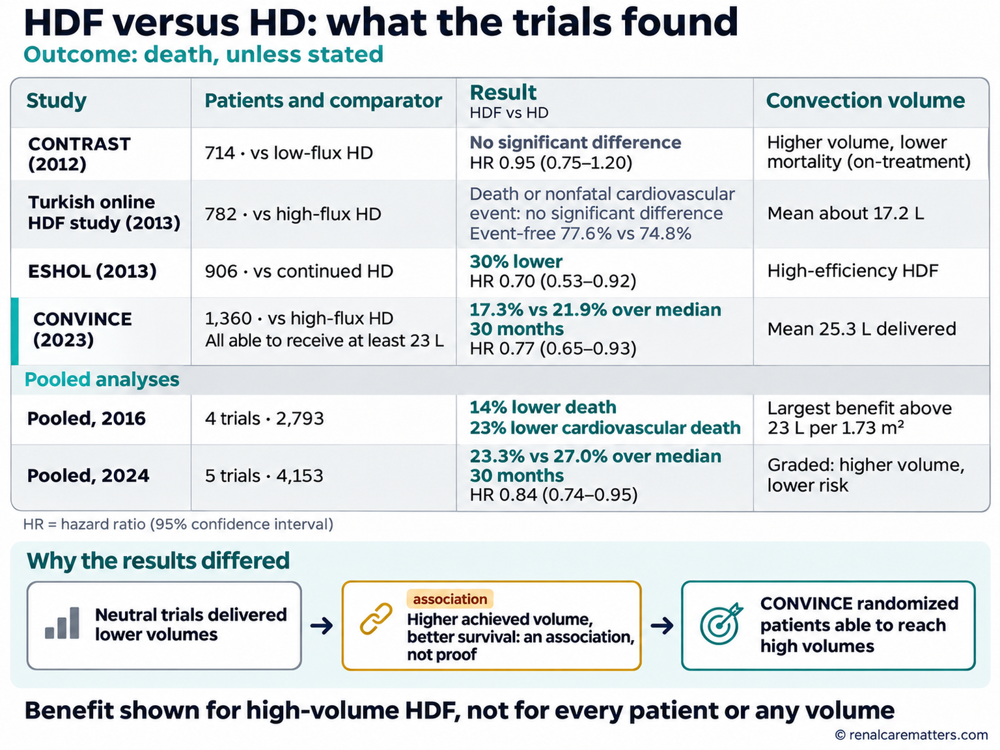
Running an HDF session: before, during, and after
An HDF session follows the same sequence as an HD session (Module 9), with additions at each stage. The machine’s operator’s manual and the unit’s written procedure govern the exact steps, which differ between manufacturers.
Before the session
- Machine status. Confirm from the logs that the machine was disinfected on schedule, that its ultrafilters are within the manufacturer’s change interval, and that the latest dialysate culture and endotoxin results for this machine or loop are within the unit’s limits. A machine that fails any of these is not used for HDF. The charge nurse and physician decide whether the patient receives HD instead.
- Self-tests. Let the machine complete all pre-treatment tests, including the ultrafilter integrity test where the model runs one. Never bypass a failed test, and never repeat it until it passes without finding the cause.
- Prescription check. Verify every item in the prescription table against the current order.
- Substitution line. Connect it to the machine’s substitution port and to the correct point on the blood line (after the dialyzer for post-dilution, before it for pre-dilution), exactly as the manufacturer’s procedure shows, with aseptic technique. This line carries fluid straight into the bloodstream. Treat any touch or contamination of the connection like contaminating an intravenous (IV) line.
- Priming. Some machines prime the circuit with online-prepared fluid instead of bagged saline. Follow the machine’s procedure, and clear all air from the substitution line.
- Patient. Assess as for HD, with special attention to the access, because the session depends on it: thrill and bruit, recent cannulation problems, and the previous session’s arterial and venous pressures.
During the session
- Reach the ordered blood flow early, and keep it. Many missed targets come simply from a blood flow kept low through the first hour.
- Watch transmembrane pressure and its trend. A slow, steady rise across the session suggests hemoconcentration or progressive clotting of the fibers. A sudden rise suggests a line or flow problem.
- Look for hemoconcentration: darkening blood in the venous line, a rising pressure at the dialyzer inlet where displayed, clots or foam in the venous drip chamber, and filtration fraction alarms.
- Blood pressure and fluid. Monitor blood pressure (BP) and symptoms at the unit’s usual intervals. Substitution fluid is volume-neutral when the machine works correctly, so assess low BP during HDF exactly as in HD: UF rate, target weight, and the patient’s condition. Check that the displayed UF volume matches the expected hourly rate. A balancing fault is a fluid-safety emergency.
- Temperature. Substitution fluid is warmed to the dialysate temperature, and a large volume enters the blood directly. Report chills, rigors, or fever at once. Treat a rigor during HDF as a possible pyrogenic reaction, or infection from contaminated fluid, until shown otherwise: stop substitution, follow the unit protocol, keep the patient safe, and notify the physician.
- Midpoint check. At halfway, compare the convection volume so far with where it should be. A shortfall is easier to correct, by order, at two hours than at the end.
| Alarm or problem | Likely meaning | First nursing check | Escalate when |
|---|---|---|---|
| Transmembrane pressure high | Too much filtration for the blood flow; hemoconcentration; fibers clotting | Confirm the actual blood flow (a very negative arterial pressure means the pump is not filling); look for dark streaks or clots; check lines for kinks; reduce substitution rate as the protocol allows | It recurs after correction, clotting is visible, or the protocol does not cover the next step |
| Substitution or infusion fault | Problem with the substitution line, pump segment, connection, or online fluid supply | Check the line for kinks, clamps, and secure connection; check for air in the line; follow the machine’s prompts | The fault persists, air is found, or contamination of the connection is suspected |
| Blood leak | Blood detected in the dialysate side, usually a fiber rupture; at high transmembrane pressures, ruptures are more likely | Stop as the machine directs; inspect the dialysate outflow for pink or red color | Always: a confirmed leak means the dialyzer is changed per protocol, and blood is not returned unless the protocol allows it |
| Conductivity | Dialysate composition wrong; both dialysate and substitution fluid are affected | Check concentrate containers, connections, and that they match the order; the machine diverts fluid until corrected | It does not correct, or the patient has received fluid of uncertain composition |
| Filtration fraction limit | Convective flow too high relative to blood flow | Check that blood flow is at the ordered level and the access is delivering it; reduce substitution rate as the protocol allows | The ordered convection target cannot be reached at a safe filtration fraction; report for prescription review |
| Ultrafilter integrity test failed | The barrier that makes substitution fluid safe may be breached | Do not start or continue HDF on that machine | Always: report to the technician and charge nurse; HD on another machine only by order |
As with every alarm in this course, find the cause before you reset the alarm. Never widen limits to keep a session running.
Anticoagulation. High filtration concentrates the blood inside the fibers toward the dialyzer exit. So post-dilution HDF circuits tend to clot more readily than HD circuits at the same anticoagulant dose. The anticoagulant and its dose remain the physician’s order. Report repeated clotting, streaked dialyzers, or sessions shortened by clotting. The remedy may be a different anticoagulation plan, dilution mode, or substitution setting, and each of those is a prescribing decision.
Ending the session. Follow the machine’s procedure for ending treatment and returning blood. Some machines return blood with online-prepared fluid instead of bagged saline. Either way, the return volume counts in the fluid balance. Disconnect the substitution line as the procedure directs and dispose of single-use parts. Never reuse a substitution line.
Documentation. Besides the usual HD record, document for every HDF session: the dilution mode; substitution volume; net UF volume; achieved convection volume; whether the ordered target was reached; the effective blood flow and effective treatment time; and, if the target was missed, the reason (access, catheter, clotting, alarms, shortened session, patient request). Record HDF-specific alarms and the action taken. A missed target is not a failure to hide. It is information the physician and the unit audit need.
Treat a rigor during HDF as contaminated fluid until proven otherwise. Stop substitution first, then find out why.
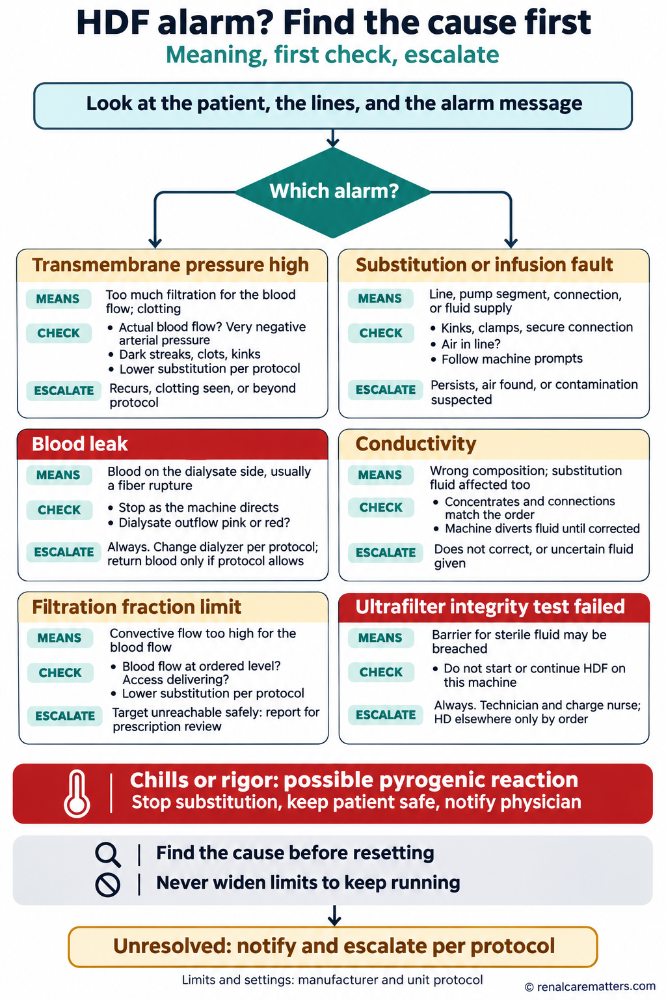
Introducing and auditing HDF in a dialysis unit
The benefit in the trials came from high volumes delivered session after session. A unit that offers HDF without measuring what it delivers cannot know whether its patients are getting the treatment that was tested. Auditing HDF uses the quality improvement methods from Module 12 and the water and dialysate controls from Module 8.
Before starting an HDF program, a unit typically confirms that its water system and machines can consistently meet the ultrapure dialysate standard, with baseline culture and endotoxin results. It writes procedures for setup, monitoring, alarms, ending, logs, and adverse events. It trains and signs off staff on each machine model. It agrees which patients will be offered HDF and how the choice is explained. And it sets the indicators it will review.
| Area | What to monitor | Questions the review asks |
|---|---|---|
| Delivered dose | Achieved convection volume per session; proportion of sessions reaching each patient’s ordered target | Which patients repeatedly miss the target, and why: blood flow, catheter, time, clotting, alarms? |
| Treatment time | Effective minutes delivered versus minutes prescribed | Are late starts or early sign-offs costing volume? |
| Water and dialysate | Culture and endotoxin results by sampling point, including HDF machines; trend toward action levels | Is any result rising, even if still below the limit? Was the response documented? |
| Ultrafilters and disinfection | Change log against the manufacturer’s interval; integrity test failures; missed disinfections | Was any machine used for HDF outside its filter interval or after a missed disinfection? |
| Safety events | Pyrogenic reactions, bloodstream infections, blood leaks, balancing faults, circuit clotting | Is there a cluster by machine, shift, or day? Was each event reported and investigated? |
| Staff competency | Training records and periodic sign-off for each nurse and technician | Is everyone who runs HDF currently signed off on that machine model? |
| Patient experience | Tolerance, symptoms, and patient-reported concerns | Are patients informed and comfortable with the treatment and its costs? |
Incident reporting. Report through the unit’s system any HDF session run with an overdue ultrafilter, a failed or bypassed integrity test, a missed disinfection, a contaminated substitution connection, a chill or fever during treatment, a fluid-balance error, or a water or dialysate result above the action level. Handle a cluster of febrile reactions under the cluster rule from Module 8: stop connecting new patients to the suspected source, assess those affected, and notify the physician, technician, and medical director.
Patient education. Patients often expect a new treatment to feel different. Explain plainly:
- What changes: the machine filters and replaces a large volume of fluid during the session; a higher blood flow is needed, so needle size or cannulation may change; setup may take a little longer; the cost may differ, and this is discussed before starting.
- What does not change: the schedule and full session time still matter; salt and fluid limits stay the same, because the fluid given back is replaced liter for liter and does not remove extra fluid; diet, phosphate binders, and other medicines continue as ordered; the access still needs daily care.
- What to report: chills, fever, or feeling unwell during or after a session; any change in the access; anything about the treatment that worries them.
- What to expect: most patients feel little difference from session to session. The benefit in trials was measured over years, and it depended on receiving the full volume regularly. That is why staying the full time and protecting the access matter.
Where HDF is offered, it is a choice, not an upgrade every patient must take. A patient who stays on well-delivered high-flux HD, because of access limits, cost, or preference, has not been given second-rate care, and should never be made to feel so.
What a unit does not measure, it cannot claim to deliver. Audit the volume, not just the setting.
Therapeutic plasma exchange: removing what no dialyzer can
Everything in this module so far has used a membrane that keeps proteins in the blood. Continuous renal replacement therapy (CRRT) and hemodiafiltration (HDF) remove water, small solutes, and middle molecules. They are built to hold back albumin and the large proteins of the immune system. Some diseases are driven by exactly those large proteins: an antibody that attacks nerve, muscle, or kidney; an abnormal protein that thickens the blood; or a missing protein that the blood needs. For these, a different idea is used. Therapeutic plasma exchange removes the patient’s plasma itself, with everything dissolved in it, and replaces it with a fluid that does not contain the harmful substance.
The plain model. Picture a pot of soup with something spoiled dissolved in it. Straining the soup keeps the vegetables (the blood cells) but leaves the spoiled taste. Plasma exchange instead ladles out broth, returns the vegetables, and tops up the pot with clean broth.
The picture has a limit. The clean broth mixes with what remains, so each ladle removes a little less of the spoiled substance than the one before. A session removes most of it, not all. And unlike a pot, the body keeps adding to it. Substances that also sit in the tissues move back into the blood between sessions, and the immune system keeps making more antibody. That is why plasma exchange is usually a course of several sessions, combined with medicines that stop the body making the harmful substance. Plasma exchange buys time. The other treatments act on the source.
What it removes. Antibodies and immune complexes, abnormal proteins made by some blood cancers, some lipoproteins, and some toxins bound to proteins. It also removes useful things: clotting factors, some medicines, and, if the replacement fluid lacks them, normal antibodies.
How the plasma is separated, in principle
| Feature | Centrifugal separation | Membrane separation |
|---|---|---|
| How it works | Blood is spun; the heavier cells settle outward and the lighter plasma is drawn off by density | Blood passes through a plasma filter whose pores let proteins through but hold back blood cells |
| Machine | A dedicated apheresis machine, often run by a blood bank or hematology service | A plasma filter on a machine able to run it, which in some hospitals is a CRRT or dialysis platform |
| Blood flow and access | Can often work with lower blood flows, sometimes through large peripheral veins | Usually needs higher blood flow, so a central double-lumen catheter is common |
| Usual anticoagulant | Citrate, mixed into the blood as it leaves the patient | Heparin or citrate, by order |
Neither method has been shown to be better for patients in general. The choice depends on the equipment and service available, the access, and the patient. The current international guideline recognizes both.17
When it is used: the guideline categories. The American Society for Apheresis publishes evidence-based fact sheets for each disease in which apheresis has been studied. The ninth edition, published in 2023, contains 91 fact sheets and 166 graded indications.17 Each indication sits in one of four categories. Learn them, because they explain why plasma exchange is urgent in one patient and debated in another:
| Category | Meaning, in our words | Examples for plasma exchange in the 2023 edition |
|---|---|---|
| I | Accepted as first-line treatment, alone or with other treatments | Thrombotic thrombocytopenic purpura; acute Guillain-Barré syndrome; short-term treatment of a myasthenia gravis crisis; anti-glomerular basement membrane disease with lung bleeding or while the kidneys still work; symptomatic hyperviscosity from very high antibody levels |
| II | Accepted as second-line treatment, alone or with other treatments | Long-term treatment of myasthenia gravis |
| III | Best role not established; the decision is made for the individual patient | Microscopic polyangiitis and granulomatosis with polyangiitis; anti-glomerular basement membrane disease in a patient already dialysis-dependent without lung bleeding |
| IV | Evidence shows or suggests that apheresis is ineffective or harmful | Thrombotic microangiopathy caused by the drugs gemcitabine or quinine |
Source for the table: the 2023 guideline.17 A category describes how established the indication is. It is the guideline’s own scale, not a KDIGO-style grade, and it changes between editions as new trials appear. The decision to treat, the number of sessions, and the volume exchanged belong to the physician and the apheresis service.
Replacement fluid, in principle. The removed plasma must be replaced, or the patient would lose blood volume and protein. The two main choices are:
- Albumin solution keeps blood volume and oncotic pressure stable. It carries little risk of allergic reaction or infection, and needs no blood-group matching. It contains no clotting factors and no antibodies. So after repeated daily sessions, the patient’s clotting factors, especially fibrinogen, may fall, and so do normal antibody levels.
- Plasma from donors contains clotting factors and the full range of normal plasma proteins. It is chosen when the patient needs what plasma supplies: for example in thrombotic thrombocytopenic purpura, where the patient lacks an enzyme that donor plasma replaces, or when bleeding risk is high. It must be matched by blood group. It carries the allergic and transfusion risks of any blood product. And it contains citrate from the blood bank, which adds to the citrate load.
Some prescriptions combine the two. The fluid type is part of the order. Check it like a blood product or an intravenous (IV) medicine, because that is what it is.
Plasma exchange removes the harmful protein and the useful ones alike. Know which replacement fluid is running and what it does not contain.
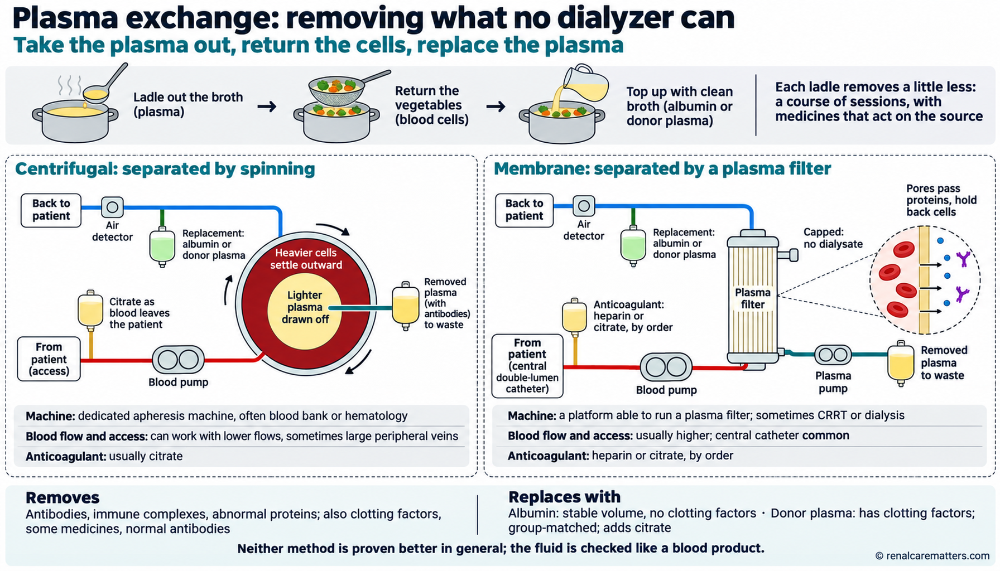
Nursing care during plasma exchange
Plasma exchange happens in an intensive care unit (ICU), a ward, or an apheresis or dialysis unit, depending on how sick the patient is and which service runs the machine. You may be the apheresis nurse running the machine, or the ward or ICU nurse caring for the patient alongside. The same safety rules apply either way: verify the order, watch the patient more than the machine, recognize the predictable complications early, and report per order and protocol.
Before the session
- Order and consent. Check the order: method, volume to be exchanged, replacement fluid and its amount, anticoagulant, number and spacing of sessions, and any laboratory tests before or after. Confirm consent per hospital policy.
- Replacement fluid. Check albumin bottles and plasma units against the order. Check plasma also against the patient’s identity and blood group with a second person, following the hospital’s transfusion procedure.
- Baseline. Record vital signs, weight, symptoms, and the neurological or other findings the treatment is meant to improve, so that change can be measured. Check that ordered baseline results, such as calcium, blood count, and clotting tests, are available.
- Access. Assess the catheter or peripheral veins. Handle a central catheter with the same aseptic care as a dialysis catheter (Module 7), and lock its lumens per order after use.
- Medicine timing. Plasma exchange removes medicines that stay mainly in the blood and bind to plasma proteins. Antibody-based medicines and IV immunoglobulin may be largely removed if given shortly before a session. Some antibiotics and other drugs may need their timing adjusted. Review the medicine schedule with the physician or pharmacist. Do not give a dose ordered for after the session until the session has ended. Some physicians also review the timing of certain BP medicines before a session, because of reactions reported with them. That decision is the physician’s.
- Other treatments. If the patient also receives HD or CRRT, the order states the sequence. The teams agree on timing so that circuits are not run on the same access at cross purposes.
During the session: what to watch for and what to do
| Problem | Why it happens | What the nurse sees | First actions |
|---|---|---|---|
| Citrate-related low calcium | Citrate, from the anticoagulant and from donor plasma, binds ionized calcium in the patient’s blood | Tingling around the mouth or in the fingertips, a strange taste, chills, nausea; later muscle twitching, cramps, tetany, low BP, or rhythm changes | Tell the operator to slow the return or the citrate rate per protocol; give calcium per order or protocol; notify the physician; check ionized calcium as ordered. Severe signs are an emergency |
| Low BP | Blood in the circuit, slow replacement, fluid shifts, a vasovagal reaction, or an allergic reaction | Dizziness, pallor, sweating, yawning, a falling BP | Lay the patient flat, slow or pause per protocol, check that replacement keeps pace with removal, give fluid per order, and notify the physician |
| Allergic reaction to plasma | Reaction to donor proteins | Itching, hives, flushing; rarely wheezing, swelling of the lips or throat, and collapse | Stop the plasma, keep the line open per protocol, assess airway and breathing, notify the physician, and treat per order; anaphylaxis is managed as a medical emergency |
| Bleeding | Albumin replacement removes clotting factors; heparin may be used in the circuit | Oozing at the catheter or puncture sites, bruising, bleeding gums, blood in urine | Apply pressure, report, and check that ordered clotting tests are done; procedures such as catheter removal are timed with the physician |
| Other | Cool returning blood; low potassium after albumin; catheter infection | Shivering; weakness or rhythm change; fever or redness at the exit site | Use the blood warmer if provided; report; follow catheter-care protocol |
Take vital signs at the interval the protocol sets, and more often at the start and during any reaction. Ask the patient to tell you at once if tingling, chills, or itching start. Early citrate symptoms are felt before they are seen, so a patient who has been taught them is your first alarm.
After the session. Record the volume of plasma removed, the replacement fluid by type and amount, the net fluid balance, any reaction and its treatment, and the final vital signs. Check that post-session samples are drawn as ordered. Give any medicines scheduled for after the session, and reassess the findings you recorded at baseline. Hand over the time of the next session, the pending results, and any reaction, using the unit’s structured handoff.
Your place in the team. The physician decides the indication, volume, fluid, number of sessions, and medicine timing. The apheresis service runs the procedure to that order. You watch the patient, recognize complications, and keep the medicine schedule and the record accurate. Prompt reporting and coordination between these roles keep a usually well-tolerated procedure from becoming dangerous.
Tingling lips during plasma exchange mean low calcium until proven otherwise. Slow the citrate, replace calcium per protocol, and call.
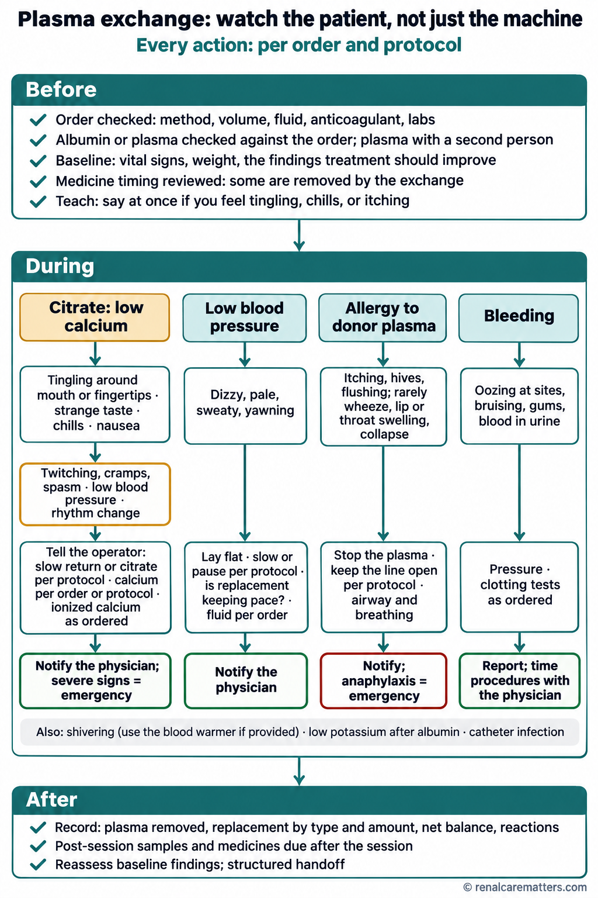
Case: Tingling lips at two in the morning
Mrs. Teresita Reyes, 58, a market vendor from Pampanga, is on day two in the ICU with septic shock and AKI after leptospirosis. She is on continuous venovenous hemodiafiltration with regional citrate anticoagulation and a calcium infusion, both run by the unit protocol. Her noradrenaline dose has come down since yesterday.
It is 2 a.m. You are her nurse. She tells you her lips and fingertips are tingling. The machine shows no alarm. Over the last 3 hours her hourly balance has run 150 mL more negative than prescribed. The calcium infusion bag ran out 40 minutes ago. Nobody replaced it, because the unit was busy with an admission.
Before reading on, decide what you would assess, what you would communicate and to whom, what you would teach, and what would make you escalate. Then compare with the outline below.
Assess
Communicate
Teach
Escalate
Check your understanding
Each visit draws 5 questions at random from this module’s 17-question bank, in a shuffled order. Choose the single best answer for each, then select Check answers; a rationale appears under every option. Reload the page or select New set of questions for a different mix. Nothing you select is sent anywhere; scoring happens in your browser.
What this module builds
Each competency names an observable ability, the level this module aims for, and how that level is confirmed. Levels follow Miller’s pyramid. Self-study reaches knows; the higher levels are reached only when an educator or preceptor verifies them, and they are recorded on the competency checklist.
- Knows Explains the reasoning and applies it to cases. Verified by the self-assessment and the nursing case.
- Shows how Demonstrates the skill in simulation, a skills station, or teach-back. Verified by an educator.
- Does, supervised Performs the task with real patients under direct supervision. Verified by preceptor observation.
- Does, independent Performs the task without direct supervision after preceptor sign-off under the unit’s policy.
| Competency | Thread | Target level | Verified by |
|---|---|---|---|
| Explains convection, the replacement-fluid site, and the filtration fraction for the running treatment, and predicts how the dilution mode affects clearance and filter life. | Delivering kidney replacement therapy | Does, supervised | Observed practice |
| Compares the continuous modes, SLED, and intermittent HD by mechanism and use, and identifies which patients and settings suit continuous therapy and which suit HDF. | Delivering kidney replacement therapy | Knows | Self-assessment, Nursing case |
| Calculates prescribed and delivered CRRT effluent dose and HDF convection volume, and explains how downtime, blood flow, and treatment time reduce the delivered dose. | Interpreting results and trends | Knows | Self-assessment, Nursing case |
| Verifies each replacement-fluid or dialysate bag against the order with a second person where required, treating replacement fluid as an intravenous medicine. | Medicines and their safety | Does, supervised | Observed practice |
| Performs a CRRT bag change using the machine’s bag-change function and resolves a balance or scale alarm in a skills-station drill. | Delivering kidney replacement therapy | Shows how | Skills station, Simulation |
| Reconciles machine net removal, patient total balance, and the prescribed goal each hour, and reports a discrepancy or signs that removal is not tolerated. | Clinical assessment and fluid status | Does, supervised | Observed practice, Record review |
| Responds to a pressure or balance alarm by assessing the patient and circuit before the machine, never overriding air or blood-leak detectors, and documents the cause. | Recognizing deterioration and emergency response | Does, supervised | Observed practice |
| Monitors citrate or heparin anticoagulation as ordered, labeling patient and post-filter ionized calcium samples by site, and reports results outside the protocol range. | Medicines and their safety | Does, supervised | Observed practice |
| Recognizes low ionized calcium, citrate accumulation, and citrate excess in a simulation, checks that the calcium infusion is running, and escalates using SBAR. | Recognizing deterioration and emergency response | Shows how | Simulation |
| Records the delivered dose as effluent dose or achieved convection volume, with downtime or missed-target reasons, and hands over using SBAR. | Communication, handoff, and documentation | Does, supervised | Observed practice, Record review |
| Recognizes CRRT complications such as hypothermia, electrolyte loss, bleeding, and drug removal, and describes how to interrupt, step down, or stop continuous therapy safely. | Clinical assessment and fluid status | Knows | Self-assessment, Nursing case |
| Explains how online HDF makes substitution fluid from ultrapure dialysate, states its access, machine, water, and dialysate requirements, and describes how a unit audits achieved convection volume. | Water, dialysate, and equipment safety | Knows | Self-assessment, Nursing case |
| Distinguishes HDF from high-flux and expanded HD and summarizes the randomized evidence, including CONVINCE, using calibrated language about what remains uncertain. | Patient and family teaching, nutrition, and shared decisions | Knows | Self-assessment, Nursing case |
| Responds in simulation to HDF-specific alarms, including high transmembrane pressure, a failed ultrafilter integrity test, a blood leak, and a rigor during substitution. | Recognizing deterioration and emergency response | Shows how | Simulation, Skills station |
| Explains what plasma exchange removes, how centrifugal and membrane separation differ, what the four guideline categories mean, and why albumin or plasma is chosen as replacement fluid. | Delivering kidney replacement therapy | Knows | Self-assessment, Nursing case |
| Verifies replacement fluid against the order, checking plasma units with a second person by the transfusion procedure, and confirms the timing of medicines that plasma exchange removes with the physician or pharmacist. | Medicines and their safety | Does, supervised | Observed practice |
| Recognizes a citrate reaction, low blood pressure, or an allergic reaction to plasma in a simulation, takes the first actions per protocol, and escalates to the physician. | Recognizing deterioration and emergency response | Shows how | Simulation |
With your preceptor
With a preceptor experienced in continuous therapy or hemodiafiltration, observe and then assist with one treatment from setup to end. These are prompts for supervised learning, not a procedure. Your preceptor observes and signs off each item on the unit’s own competency form; the educator page has a printable version.
- Explains convection, the replacement-fluid site, and the filtration fraction for the running treatment.
- Verifies each replacement-fluid or dialysate bag against the order with a second person where required.
- Reconciles hourly fluid balance against the prescription and reports a discrepancy.
- Responds to a pressure or balance alarm by assessing the patient and circuit before the machine, and documents the cause.
- Monitors anticoagulation as ordered (ionized calcium for citrate, clotting tests for heparin) and reports results outside the protocol range.
- Records delivered dose (effluent dose or achieved convection volume) and hands over with SBAR.
Read next on this site
- Continuous Renal Replacement Therapy: A Clinical ReferenceClinician reference for continuous therapy: modes, dose, anticoagulation.
- Dialysis Decisions in Intensive CareHow starting, continuing, and stopping kidney support in the ICU are decided.
- Is Hemodiafiltration the New Standard? High-Volume HDF vs High-Flux HemodialysisThe case for and against hemodiafiltration as a standard treatment.
- Hemodiafiltration Deep Dive: What the Evidence Has Taught UsHemodiafiltration in depth: convection volume, machines, and evidence.
- Hemodialysis Water Treatment SystemsWater quality, which online hemodiafiltration depends on.
- KDIGO acute kidney injury guideline page (2012 guideline and the status of its update)Primary source (external site).